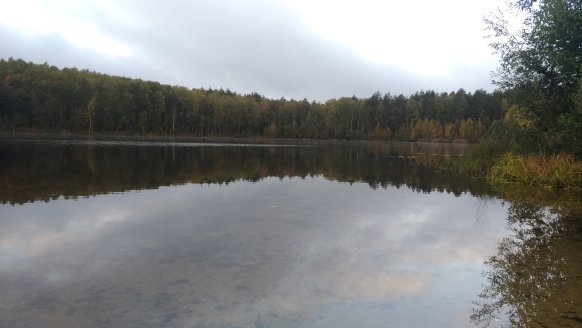
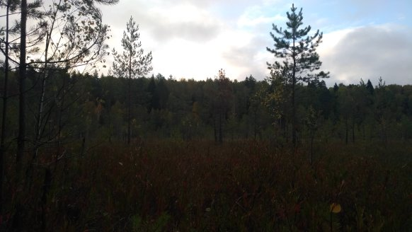

Perusteluja
Krasnaja Maika (Красная Майка) on kyrilisistä aakkosista latinalaisille käännetty sanapari, joka tarkoittaa sananmukaisesti punaista aluspaitaa (sanan suku, feminiini). Nimeni on Maika.
Luultavasti sinä, joka luet blogiani, tunnet minut jo, sillä tämä ei löydy trendikkäistä blogilistauksista, tai oikeastaan mistään blogilistauksista, koska olen rakentanut tämän tyhjästä ilman ulkopuolista blogialustaa (kunniamaininta tietenkin R-studiolle ja Gtihubille, joiden kautta operoin projektiani. Lue lisää etusivulta.). Täältä voit tarkistaa, että olen hengissä. Vakuutan, että olen.
Mikäli et tunne minua entuudestaan (tai vielä tarpeeksi hyvin!), asun seuraavat puoli vuotta Kazanissa, Tatarstanin tasavallassa, Venäjän federaatiossa. Tiedän jo kaupungista jotain muuta kuin mitä Wikipedian ensimmäiset kaksi kappaletta kertovat siitä. Venäjää olen lukenut monen vuoden ajan, mutta hajanaisilla kursseilla. Virallisena tavoitteena on oppia ennen kaikkea venäjää, mutta epävirallisen opetussuunnitelman mukaan ihminen, joka lähtee vaihtoon, ei tule enää takaisin samana. Älkää huoliko, lupaan tulla takaisin!
Pitkät jäähyväiset
23.12.2018
Joulu on huomenna, eilen vielä oli kesä. Vietämme sen kansainvälisessä porukassa, frendin pienessä yksiössä. Jokainen ”kansakunta” on valmistautunut tekemään jotain ruokaa ja itsevaltiaan oikeuksilla, voin lanseerata suomalaiset blinit suomalaiseksi erikoisuudeksi. Lisäksi lempiopettajani (Aigöl [aigöl ööllä, koska aigöl on alkujaan tataarinimi, eikä siis ollenkaan venäläinen] ven. Айгуль) täältä tulee vetämään viimeisen leffaluennon kyseiseen yksiöön, sillä mikään muu päivä ei sopinut kaikille. Olin myös hänen vetämällään viimeisellä kirjeiden kirjoituskurssilla, meitä oli tasan kaksi luennolla. Selitimme tilanteen, että kaikki leffakerholaiset ovat oppitunnin aikaan valmistamassa jouluateriaa suomalaisen toverimme luona, emmekä siksi silloin pääse luennolle. En enää osaa sanoa, kuinka asiaan päästiin, mutta jossain vaiheessa Aigöl vihjasi, että eihän oppitunnin ole pakko olla luokassa ja hän voi viinin kera tulla ”mihin auditorioon tahansa”. Kysyin, olisiko hän valmis tulemaan meidän kanssamme katsomaan viimeisen leffan, kun kaikki samassa osoitteessa muutenkin ovat ja hän valtuutti minut kysymään osoitteen omistajalta. Kaikki sanoivat kyllä. Kaikilla on arvosanat ja pisteet annettu, mutta siitä huolimatta olemme valmiita osallistumaan jouluaattona viimeiselle luennolle opettajamme kanssa. AIgöl on just niin hyvä, oi oodi Aigölille!
Nyt aloitan loman, myös blogista. En tiedä, milloin olen taas koneen äärellä ja kirjoittamassa. Suunnitelmissa on olla melko paljon tien päällä (Moskova, Nizhnij Novgorod, Ekofarmi, Foro-festarit…) ja sitten onkin jo melkein aika tulla kotiin. Aivan kuten alussakin meni aikaa totuttautumiseen, on aikaa sanoa myös näkemiin Venäjälle, ehkä hyvästit Kazanille. Kaikki kaupungit koostuvat ihmisistä, tarinoista, loputtomista seikkailuista. Niin myös minun Kazanini. Toivon, että sinusta on ollut mielenkiintoista lukea tarinoita, ehkä olet oppinut jotain, ehkä sinulle on herännyt kysymyksiä. Kerro ne kaikki minulle, kun palaan. Mutta nyt, olen vielä hetken täällä, hetkessä.
Kiitos, kun olet pysynyt mukanani; kiitos että sinua on kiinnostanut elämäni niin pitkälle, että olet lukenut pitkät ja lyhyet jutut; avannut sivun hankalan kokoisilla kuvilla tai ei kuvilla ollenkaan, rumalla fontilla ja sivukin on niin oduolla linkillä, että se näyttää enemmän virukselta kuin taloudellista voittoa tavoittelemattomalta viestintäkanavalta. Minäkin kaipaan sinua. Nähdään pian. Hyvää joulua.
-M
Последный пост?
Я не знаю что сказать. Это может быть последный раз когда пишу на блог потому, что я планирую много путешествовать на послоедном месяце. Что я здесь училась? Тоже не знаю, только знаю что ещё вернусь, ещё хочу жить в России, хочу изучать язык и культуру, люди и жизнь. Я полюбилась, это точно что знаю.
С Новым годом! С Рождеством! Надеюсь, что скоро увидимся, надеюсь что вообще увидимся. Если нет, спасибо за всё. Я бсе опыты несу собой до конца.
твоя, Красная Майка
Mainitsemisen arvoista
Luistelu! Harvoin saa olla kentän kokenein luistelija.
Usbekki-ravintola. Sieltä saa tähän mennessä parhaat maistamani leposhkat!(auringon muotoiset leipäset, joita saa kaikkialta)
Venäläinen tarjoilija unohtaa duuninsa, kun jää noin tunniksi juttelemaan kanssani matkustamisesta ja vierauden tunteesta kotimaassaan.
Jokainen hali on kuin viimeinen.
Huono venäläinen elokuva VIP-salissa.
Ostin korttipakan, jossa on vain 36 korttia. Pitänee opetella Durak (venäläinen korttipeli)
Loppuja ja alkuja
16.12.2018
En tiedä, mistä aloittaisin, viikko on tuntunut kuukauden mittaiselta. Osittain siksi, koska olen priorisoinut kaikkea muuta paitsi unta. Tältäkö tuntuu ihmisistä, jotka eivät nuku puolta elämästään pysyäkseen toimintakuntoisena? Tältäkö tuntuu olla osa suurta porukkaa, joka on täynnä siistejä tyyppejä, mutta pääsyä ei rajoiteta cooleus-faktorin mukaan? Olen juhlinut Suomen itsenäisyyttä junassa, omaa syntymääni pitsan ja birran kera ja vaihtoajan loppua keskellä metsää Kazanissa.
Syntymäpäivän kynnyksellä herää kysymyksiä edellisestä ja seuraavasta vuodesta. Tämän viikon aikana olen oppinut, että pärjään yllättävän vähällä unella yllättävän pitkään. Olen oppinut, että siedän epävarmuutta paremmin kuin uskoin, olen jopa tottunut siihen, mutta on se silti haitarista. Suunnittelemattomuuden palkintona on spontaanius, jossa on omat hyvät puolensa. Täysin saman voin sanoa oman tilan jakamisesta toisen ihmisen kesken. Huomaan arvostavani Suomen byrokratiaa (tai sen minimaalisuutta) aiempaa enemmän. Olen huomannut kaipaavani suomen kieltä enemmän kuin uskoisin. Oli upeaa olla juuri sellaisissa kotibileissä (vaihtarien järkkäämä lukukauden ja osalle myös vaihdon päättäribileet), jollaisiin olisin aina teininä toivonut pääseväni, ja sen jälkeen todeta, että pidän oikeastaan enemmän rauhallisista illanistujaisista, joissa on hyvää ruokaa ja juomaa, korttipelejä musiikkia ja vähemmän kuin 50 ihmistä yhdessä huoneessa.
Ekaterinburg (Екатеринбург)
Aloitimme juhlapuheella baarissa itsenäisyyspäivän kunniaksi ja jatkoimme äiti maan juhlistamista junassa. Koskaan ei ole Maamme-laulu ollut yhtä koskettava ja yhtä epävireinen, kuin suomalaisen sielunveljeni kanssa laulettuna junavaunujen välissä raiteiden kopistessa ja tuulen humistessa korvissa. Aamulla, kuten perinteisiin kuuluu, babushka junassa tarjosi kanankoiven ja tattaripuuroa. Ruoka oli tietenkin mahdoton syödä ja tarjoamisiin ei voi sanoa ei. Onneksi ruotsalainen toveri pelasti minut hädästä ja otti uhrin vastaan.
Ekaterinburg on kallis ja täynnä hipster-ravintoloita, mutta sillä hinnalla söin ehkä reissun parhaan ruuan Georgialaisessa ravintolassa. Arkkitehtuuri on juuri sellaista neuvostotyyliä, kuin kuvittelet. Ei hieno ja klassiseen tyyliin suuntautuva stalinistinen jylhyys eikä Kazanin moderni historiattomuus tai tsaarinaikainen herraskaisuus, vaan valkoharmaista legopalikoista rakennettu kaavoitus.
Voisin kertoa paljonkin, mutta mieleenpainuvimmat kulttuurikohteet olivat Jeltsin-keskus sekä Kirkko veren päällä. Kirkko veren päällä (ven. Храм-на-Крови́ во и́мя Всех святы́х) on viimeisen tsaarin, Nikolai II:n ja hänen perheensä murhan muistoksi rakennettu kirkko. Kirkko on rakennettu paikalle, jossa bolshevikit ampuivat perheenjäsenet. Vuonna 2000 Venäjän ortodoksinen kirkko kanonisoi koko keisariperheen ja julisti sen pyhäksi. Venäläisen ystäväni mukaan Nikolai II on ainoa tsaari, joka on julistettu pyhäksi. Harmillisesti en voinut ottaa kuvia sisältä, mutta voin vakuuttaa, että maalaukset olivat upeita, noudattaen sekä renensanssityyliin realismia, Art Nouveaun koriteellisuutta ja tietenkin ikonitaiteen symbolisuutta. Erityisen jännittävää oli nähdä tsaariperhe ikonimaalauksissa ja ikonien uudelleenkäyttöä tsaariperheen pyhyyden korostamisessa. Esimerkiksi Tsaari Nikolai II:n kruunajaisista kertovaa kuvaa koristi myös Marian ja Jeesuksen ”hellyys” (умиление)-kategoriaan kuuluvien ikonien kanssa; hellyys-ikonit korostavat Marian tietoa Jeesuksen tulevasta kuolemasta, vaikka ikonissa Jeesus on vielä lapsi. Marialla on katsojaan vetoavat silmät ja suojeleva ote: hän tietää, mitä tulee tapahtumaan, mutta se ei poista pyyntöä hänen katseestaan. Rinnastuksessa jo kruunajaisissa on tiedossa Nikolai II:n marttyyrikuolema. Pyhimystarinassa, hänen kruunaamisensa johti vääjämättömään tapahtumaketjuun, joka johti hänen kuolemaansa, ”ymmärtämättömien massojen” tekemänä. Nikolai II:n vertaus Jeesukseen on ilmeinen, mutta maalauksissa tsaariperhe on kuitenkin alimpana, osoittaen hierarkian.

Kahden venäläisen suulla olen kuullut, että Boris Jeltsin, venäjän ensimmäinen presidentti oli paha ihminen, joka olisi ansainnut Jeltsin-keskuksen sijaan rangaistuksen. jeltsin-museo sen sijaan oli kritiikittömän ylistävä, mutta siitä huolimatta hienosti rakennettu museo. Se sijaitsee Jeltsin-keskuksessa, joka hyvin sopii kapitalismin Neuvostoliittoon lanseeranneelle presidentille (1991-1999). Jos katsoja kykenee ohittamaan historiallisen yksisilmäisyyden ja kaunistelun, museo on monipuolinen ja katsojalle helposti lähestyttävä. Lisäksi ammattilaista lämmittää alkuperäislähteiden määrä aina Jeltsin ja Bushin puhelinkeskusteluiden raportoinneista ajan uutispuheisiin ja sanomalehtiin. Lisäksi Jeltsinin kausi oli jaettu temaattisesti ja kuvaannollisesti ”seitsemään päivään” seitsemässä eri huoneessa, joka teki näyttelystä helposti seurattavan. Mukana oli paljon aikalaiselämän kuvausta, kuten tyhjiä ruokahyllyjä kuvaamaan anarkiaa seurannutta pula-aikaa ja televisiosta pyöri Joutsenlampi, kuten pyöri silloin kuin Neuvostoliitto kaatui. Valitettavasti tässä vaiheessa matkaamme oli vuorossa jo viimeinen kulttuurikohde ja kahden tunnin kiertelyn jälkeen stamina alkoi pikkuhiljaa huveta siihen pisteeseen, että lähes nukahdin museon penkille. Lähdimme ulos tyytyväisinä Venäjän perustuslain ilmaiset kopiot taskuissamme.
С днём рождения
У меня остаётся только последний зачёт на следующей неделе. Я чувствую себя так свободна как раньше наверно некогда. Внезапно, я замечаю, что у меня свободное бремя, много новые приятелей, даже друзей и может быть ещё сильные отношения с старимы друзьями. я могу объяснить немецкая игра на русском языке, держать дискуция также на русском 4 часа, дать тост, понимать инструкции, вести дела с бюрократии, говорить на телефоне, всё на русском языке. Только одно плохо, что всё кончится скоро. Я знаю, что такая жизнь не возможно вести вечно, но только полгода побольше? Сейчас я чувствую, что я готова вернуться на любом время назад. Россия, я жду возможность!
Mainitsemisen arvoista
Visotski-museo (Высоцкий музей)
Aasian ja Euroopan raja
HHenkilökohtaisen neljännesvuosisadanvaihde yöjunassa
Karaoke Venäjällä
Olen tainnut muuttua hieman venäläiseksi, sillä vapaaehtoisesti a) pidin maljapuheen ja b) pidin sen venäjäksi.
Paintball (Pidin siitä enemmän, kuin kehtaan myöntää)
Sauna. (Aina mainitsemisen arvoinen. Lisäksi olen käännyttänyt kaksi italialaista saunomaan alasti.)
Hehkuviini saksalaisittain (pikkujoulut)
Ensimmäiset hyvästit
Ни пуха ни пера
4.12.2018
Здравствуйте, дорогие друзья! На прошлом неделе я не успела выдвинуть блог, потому что отдала компьютер в одалживание подруге. И потому что у нас будут экзамены на этой неделе, я думала писать только на русском языке, чтобы могу сказать что «подготовлю на экзаменах». Поэтому, это пост для тех которых могут читать на русском. У нас уже был один зачёт, но мы только слышали об этом 10 минут перед начению лекции, и поэтому не могу сказать что уже надо было подготовить на экзаменах.
На этой неделе начинают экзамены серьёзно. Я волнуюсь только сдать, но результат и оценки, кроме акцептированного, не очень важные. Язык — это только коммуникация, и мне только важно что я научу - где и как, всё равно. Конечно, есть линк между учиться и настоящей жизнью, но здесь я научила русский язык и русскую культуру боле, нет на уроках, но везде - на вечеринках, в хоре, в барах, на танцуроках, и особенно с людьми.
Говоря о танцуроках, я начинала Линди-хопп тоже на уроках. Нет только чтобы луче изучать сам танц, но чтобы интегрировать в группу. Я такая хитрая девушка, нечего происходить случайно. Я поразилась что здесь тоже женщины могут водить, не только мужчины. Я даже весла на тренировке когда были слишком мало партнёры. Но это тоже показивает проблема танца и особенно здесь в России. Я думала, что это признак равноправии, но моя русская подруга считает что это грустно когда женщины водит, потому что это запоминает о время после войны когда точно не было достаточно мужчин. Может быть это чуть-чуть оба. Я честно думаю, что Линди-хопп группа боле открыто новым идеям, но тоже видно, что меньше мужчины чем портнёщи. На всяком случае, я хочу учит водить, потому что я думаю это сломается предположения которые роли у полов.
Я тоже настроила себя чтобы петь на концерте, но не успела вы учить слова наизусть чтобы петь без нот перед зрителей. Вместо того я долго гулялась с подругой, знающей маршруты в лесу. Мы проходили около 3 часа, до закания. Я желала спокойной ночи в 16 часов, потому что было уже так темно.

В конце неделя, на день самостоятельность Финляндии, поедем в Екатеринбург и вернёмся на моём день рождения. Но об этого скажу на следующей неделе!
Kulttuurimuuri ja portteja siihen
25.11.2018
Mikä venäläisessä kollektiivisuudessa harmittaa
Yliopisto muistuttaa täällä enemmän ala-astetta kuin yliopistoa. Meitä pyydetään palauttamaan läksyt erillisellä läksyviholla, opettajat kysyvät poissaoloista ja heidän pitäisi välittää kirjalliset selvitykset poissaoloista ylöspäin. Kaikki johtaa ajatuksesta, että me olemme lapsia heidän silmissään. Se pitää sisällään paitsi holhoamisen myös ylemmyyden tunteen. Tämä kävi piinallisen selväksi Venäläinen lehdistö -kurssilla, jossa 10 minuuttia ennen oppitunnin alkua opettaja laittoi WhatsApp -viestillä kurssimme ryhmään, että meillä on seuraavalla tunnilla loppukoe ja että hän ei itse tule paikalle. Hetken päästä koemateriaali ilmestyi keskusteluryhmään. Kirjoitin ryhmään, että eihän näin voi olla, ei voi ilmoittaa kokeesta, kun meillä ei ole ollut aikaa valmistautua kokeeseen. Opettajan vastaus oli ”On mahdollista”.
Lyhyt viestien vaihto osoitti enemmän kuin kielellisen ymmärtämättömyyden, kulttuurisen kielimuurin. Kun sanoin ”eihän tämä ole mahdollista” tarkoitin, että ei ole reilua asettaa meidät tekemään koetta ilman valmistautumista. Opettajan ”on mahdollista” ilmaisi hänen näkemystään omasta asemastaan, jonka pohjalta hän voi sanella mitkä ehdot tahansa. Reiluutta oleellisempaa oli tehdä, mikä hänelle oli mukavinta. Hänen ei tarvitse perustella käytöstään eikä miettiä meidän asemaamme ja meidän ei tulisi valittaa.
Toinen tapaus oli pienempi ja harmittomampi, mutta sitäkin kuvaavampi. Istuin laitoksen käytävän lattialla, sillä olin hiukan etuajassa emmekä tienneet luokkahuonettamme etukäteen. Ohi kävelee filologian laitoksen johtaja, joka pyytää minua menemään istumaan jonnekin muualle. Käytävällä ei ole yhtäkään penkkiä enkä tiedä luokkahuonetta. Kysyin, onko siinä jotain väärää, että istun lattialla. Johtajan vastaus oli, että hän ei olisi tullut sanomaan, ellei se olisi tuntunut hänestä väärältä. Hän sanoi ihan oikein, että täällä minua ei arvostella suomalaisten standardien vaan venäläisten pohjalta, jonka johdosta se, että istun lattialla, tekee minusta täysin alemman luokan kansalaisen. Hän siis piti vain huolta statuksestani ja maineestani opettajien ja muiden oppilaiden silmissä. Yhtä kaikki hän piti huolta statuksestani kysymättä minulta, haluanko sitä. Häneltä jäi siksi huomaamatta, että ehkä minua ei haittaa näyttää luokattomalta heidän silmissään, ehkä minua ei kovin paljoa häiritse, että heidän silmissään näytän sivistymättömältä, kouluttautumattomalta ja ehkä vielä häpäisen oman yliopistoni ja maani toiminnallani. Jos yliopistoni ja maani loukkaantuu tästä, en ehkä tahdo edustaa kyseisiä instituutioita. Lisäksi argumentti ”se tuntuu minusta väärältä” ei ole riittävä minulle muuttamaan toimintamalliani.
Mikä venäläisessä kollektiivisuudessa on ihanaa
Lempikahvilani Kazanissa on nimeltään Tsifferblat, ja siellä maksetaan tuotteiden sijaan ajasta. Sisustus on luova, kaunis ja mielenkiintoinen, ihmiset rentoja ja maisemat upeat. Tänä perjantaina heillä oli Lindy-hop -kekkerit, jonne menin katsomaan menoa. Kuulin musiikin soivan jo ulkopuolelta, mutta vielä kukaan ei tanssinut. Keräsin rauhassa teet ja keksit lähelle ja menin istumaan nojatuoliryhmään, jossa toisessa nojatuolissa näytti istuvan ”tanssija”. Mistä tunnistaa tanssijan? Hänkin istui yksin tanssikengissä ja värikkäissä sukissa, siisteissä, mutta rennoissa vaatteissa, sellaisissa, joissa on mukava tanssia, mutta tärkeää on myös swing-tansseihin kuuluva 1950-lukularppaus. Tanssija nousikin pian pyytämään toista tyttöä tanssiin ja tanssin jälkeen palasi paikalleen. Aloitin lauseen puolikkaalla kysymyksen, jonka johdosta vaihdoimme jo nimet ja lyhyet elämäntarinat, ja 5 minuutin päästä hän pyysi minut tanssimaan. Tanssin jälkeen hän osoitti toista pöytäryhmää, josta löytyisi myös tanssijoita. Vasta illan lopulla minulle selvisi, että olin tanssinut ensimmäisen tanssini tanssistudion opettajan kanssa. 15 minuutin päästä olin tanssinut jo puolet viejistä läpi ja yhden tanssin verran vein toiselle tytölle boogi-woogieta. Tunnin päästä eräs minulle tuntematon nainen aloitti keskustelun: ”Niin sinäkö olit Suomesta?”.
Illan päätteeksi minulle neuvottiin tanssiryhmä, jonne voin mennä treenaamaan, vaikka olemme keskellä kautta jo pitkällä. Tällä kertaa neuvominen ei tuntunut siltä, että minua ei pidetä täysivaltaisena aikuisena vaan siltä, että minut halutaan mukaan, joten saan kaikki tiedot, mitä tarvitsen sen tehdäkseni. Olin yksin vieraiden ihmisten keskellä, tanssien lajia, jota en pysty tanssimaan samalla kun puhun (ainakaan venäjää). Täällä ulkomaalaisuuteni ja vierauteni ei ollut haitta vaan jopa nopeutti minua pääsemään nopeammin porukkaan. Ryhmä tuntui samalla tavalla kotoisalta kuin Suomessakin juuri sen tähden, että minut sulautettiin ryhmään vaivattomasti ja välittömästi.
Jänniä juttuja
Oopperaan 50 ruplalla (~0,70€)
Italialaisia korttipelejä
Vegaaniravintola (löysin vihdoin soijarouhetta!)
Loskaa, jota kutsun lumeksi, koska täällä loskakin näyttää kauniilta
Perhe käymässä (He pääsivät kuin pääsivätkin byrokratian hampaiden lävitse yliopistokylään.)
Musiikin voimalla
16.11.2018
Noin kuukausi sitten menin Oopperatalolle kysymään, mihin oopperanäytöksiin on vielä lippuja. Ostin liput Boris Godunoviin (ven. Борис Годунов), oopperaan, josta en tiennyt muuta, kuin että nimi kuulostaa venäläiseltä. Boris Godunov oli juuri sopiva valinta minulle: laulu venäjäksi venäläisillä tekstityksillä, pukuloisto mukaillen venäjän keskiaikaista tyyliä, upeat lavastukset pitämässä mielenkiintoa yllä ja hyvä syy oopperan muodossa tutustua Venäjän keskiajan historiaan. Juoni olisi ollut mahdoton käsittää ilman historiallista taustaa: ymmärsin oopperan juonitiivistyksen vasta luettuani lyhyen tiivistyksen Boris Godunovin elämästä. Säveltäjä ilmeisesti oletti, että toki venäläiset historiansa tuntevat.
Minua sivistyneemmät voivat tietää, että oopperan nimi viittaa Venäjän tsaariin 1600-luvun taitteessa ja kertoo tarinan Boris Gadunovin valtaannoususta, kilpailijan kehmeilyistä ja loppuaikojen katumuksen tunnelmista. Ooppera on 1800-luvun loppupuolen Modest Mysorgskijn (ven. Модест Петрович Мусоргский) tulkinta 1600-luvun tapahtumista ja sopii siten erinomaisesti venäläiseen kansallisromantiikkaan: ooppera lauletaan kansankielellä, venäläiset talonpojan laulavat ensin kunniaa tsaarille sitten nälkäänsä Punaisella torilla. Oopperassa vale-Dimitri hakee apua lännestä naimalla katolisen puolalaisen aatelisen Marinan, vaikka tsaarin pitäisi olla ortodoksien suojelija. Laitoin kilpailija tekeytyy Tsaari Iivana Julman pojaksi, joka puukotettiin nuorena. Historiallisesti näitä vale-Dimitrejä oli useampi, mikä tuo havainnollistavalla tavalla esiin puutteellisen henkirekisteröinnin ja vallan häilyvyyden. Kuolleen henkilön identiteetin varastaminen oli mitä ilmeisimmin toimiva tapa legitimoida valtansa ainakin hetkeksi. Oopperassa on myös lyhyt laulu Kazanin valtaamisesta, joka sopinee venäläiseen patriotismiin, mutta on hiukan erikoista katseltavaa Tatarstanin pääkaupungissa.
Suomiflow
Paikallisella klubilla näin tytön Flow-kassia kantaen. Itse en ensin kiinnittänyt huomiota kyseiseen kangaskassiin tahi sen kantajaan, ennen kuin ystäväni kysyi: ”Eikös Flow-festivaali järjestetä vain Helsingissä?” Rohkaisevan googlailun jälkeen kysyin Flowtytöltä suomeksi ja hämmentyneen ilmeen jälkeen venäjäksi, onko hän ollut viime aikoina Suomessa. Kävi ilmi, että kyseessä on Helsinkiin kertaheitolla rakastunut turisti, joka välittömästi halusi vaihtaa yhteystietoja sosiaalisessa mediassa ja tavata kahvilla. Saimme sovittua kahvit tälle viikolle ja keskustelun lomassa kävi ilmi, että Flow ei ollut ainoa asia, johon hän rakastui Helsingissä. Hän oli pukenut Marimekkoasusteensa minua varten ja harmitteli kun oli hukannut muumituliaisensa matkalle. Hän näytti kuvia vielä lämpimästä elokuisesta Helsingistä ja vieraan ihmisen kesäiset kuvat kotikaupungistani saivat minut ensimmäistä kertaa ikävoimään itse kaupunkia. Olisimme saaneet oivan opiskelijan Helsinkiin, mikäli elinkustannukset eivät olisi ulkomaalaiselle mahdottomat.
Ekoja kertoja
Tein myös oman ensiesiintymiseni osana yliopiston Kapella kuoroa. Lauloimme ilman apuvälineitä, siis sanoja ja nuotteja, Gaudeamuksen kaksi ensimmäistä säkeistöä alkuperäisinä ja yhden säkeistön venäjäksi. 1 Olen toki kuullut Gaudeamuksen monta kertaa, mutta koskaan ei ole ollut syytä opetella sanoja ulkoa. Olin jo siksi päättänyt että en osallistu esiintymiseen, kunnes kuorotoverini vakuutti, ettei sanojen opetteluun mene kauaa. Aloitin pänttäämisen saman aamuna ja kello 12 olin esiintymässä. Muu kuoro lauloi niin kovaa, että rehellisesti sanottuna en ole varma lauloinko ollenkaan saati oikein, koska omaa ääntäni en kuullut lainkaan. Mutta kuoroesiintymisessä on se hyvä puoli, että näky on vaikuttava, kun kaikilla on yhtenäiset vaatteet (kuorolla on oma puvustonsa), massaa on riittävästi ja riitasoinnut eivät kuulu läpi. Jos joku olisi sanonut tämän vuoden alussa, että tulen esiintymään kuorossa ja vieläpä venäläisessä yliopistokuorossa…
Музыка по-русски
На этой неделе я могу сказать, что музыка доводиться меня до русской культуры. Во-первых, я первый раз в жизни исполняла с хором, пела на цене. Мы пели [Gaudeamus Igitur] без бумаг с словами и нотами. Честно сказана, я так тихо пела что вряд ли кто-нибудь даже меня слышал, но всё равно это была опыт я не ждала пройзходен.
Я тоже встретилась с девушкой, посетенная в Финляндий чтобы ходить в фестивале. Четверо друзей хотели ходить на фестивале, и случайно только ф Финляндии была во правильное время фестивали музыки. Она показывала фотки из Хельсинки и в первый раз я скучала о Хельсинки - мой родной город.
Я тоже пошла смотреть Борис Годунов на оперу. Я только выбрала свободное представление, но этот спектакль был совсем правильно: они пели по-русски и сказали о русской истории. Это мотивировала меня почитать о истории России, но было тоже только красиво. Одежда, подставки - потрясающие! кстати, в моей комнате так холодно что я пишу блог на перчатках.
Missä historia elää
11.11.2018
Olen istunut bussissa 10 tuntia, mutta sen hinnalla olen päässyt näkemään, että hiukan Kazanin keskustaa syrjemmässä, elämä näyttää siltä, miltä kuvittelen sen näyttäneen 50 vuotta sitten.
Joshkar Ola
Maanantaina oli Venäjän kansallisen yhtenäisyyden päivä, mikä tarkoittaa koko syksyn ainoaa virallista vapaapäivää. Menimme sillä ajalla Mari Elin pääkaupunkin Joshkar-Olaan. Joshkar-Ola lienee kuuluisin edellisen presidentin suuruudenhullusta hankkeesta rakentaa pienoiskaupunki kaupungin sisään kopioiden Amsterdamia ja Moskovaa. Lopputulos on jotakuinkin järkyttävä, mutta oli mielenkiintoista katsoa, missä kohtaa katua rahoitus on loppunut kesken. 100 metriä rantakadusta alkaa vähitellen oikea kaupunki. Bussien räminästä kuulee ja katujen kuopista näkee, mikä kaikki jäi uudistamatta rantabulevardin takia.

Tatarstanin ympärillä on mahdollista päästä tutustumaan Suomen
sukukieliin Mariin ja Udmurttiin. Joshkar-Olassa (ven. Йошкар-Ола) Mari
ei näkynyt silmiinpistävästi muuta kuin museokierroksen esityksen
kahdessa sanassa (Jumala ja tuli: kuultuna Jumal ja
tul. Asiantuntijat voivat korjata, itse nappasin
korvakuulolta). Tunsin kielisukulaisuudesta outoa erityisyyttä, jota ei
pääse usein kokemaan. Matkaryhmämme kesken vain minun äidinkieleni oli
sukua Marille, kerrankin minulla oli etulyöntiasema uusien sanojen
muistamiselle tai mahdollisuus tunnistaa vieraita sanoja.
Kukmor
Soluttauduin toisen ryhmän ekskulle Kukmoriin (ven. Кукмор), Kazanin teollisuuskaupunkiin. Tai pikemminkin kylään, jossa sattui olemaan kolme tehdasta, jotka työllistävät tarpeeksi ihmisiä, jotta sitä voi kutsua kaupungiksi. Kukmorissa sijaitsee Venäjän suurin huopatossutehdas ja siten kuvittelisin, että myös maailman suurin. Vaikea kuvitella, että missään muualla olisi tarvetta rakentaa suurempi tehdas huopatossuille (ven. валенки)
Tehdas oli hauska yhdistelmä liukuhihnakäsityötä ja koneita. Villa oli sekä kotimaista että jostain syystä osin Australiasta asti rahdattua. Tehdasrakennus on 1800-luvun lopulta ja sen koneet näyttivät siltä, että niitä ei ole uudistettu perustamisen jälkeen. En ihmettelisi, mikäli samat ihmiset olisivat olleet samassa tehtaassa töissä katkeamatta vallankumousten, valtiorajojen muutosten ja finanssikriisien ohi.
Kukmorissa oli myös talvitakkitehdas sekä paistinpannutehdas. Tehtaiden sukupuolijakauma jakautui juuri niin stereotyyppisesti kuin kuvitella saattaa. Huopatossutehtaassa oli yksi valmistusvaihe, joka ”on varattu miehille”. 2 Lisäkysymysten jälkeen selvisi, että se johtui fyysisen vaativuuden takia, mutta täällä se voi tarkoittaa joko sitä, että tosiaan minun kokoiseni ihminen ei sitä fyysisesti kykene suorittamaan tai venäläiset vain olettavat, että en kykene siihen erilaisten sukupuolielimieni takia. Yhtä kaikki, täällä ominaisuus liitetään sukupuolen eikä yksilön ominaisuudeksi: ei puhuttu voimaa vaativasta työnkuvasta vaan miehen työstä. Huopatossutehtaalla oli yksi mies ompeluosastollakin. Ompelija on yksi harvoja ammatteja, joka on alkujaan ollut ensin feminiini-muotoinen sana, jolle oikein ole miesvastinetta (ven. швея). Tällä miehellä on varmaan jonkin verran selittelemistä ammattivalintansa kanssa, jotta venäjällä voi olla mies. Vastineeksi paistinpannutehtaassa saattoi haistaa miehisen myskin, kun haalaripukuiset miehet valoivat sulaa alumiinia ja paukuttelivat valmista tuotetta – ilman kuulosuojaimia tietenkin. Vasta pakkauspuolella näkyi tehtaan ainoat naiset.

Настаяшая Россия
На этой неделе мы были в маленьких местах, где жизнь ещё как это была на советском союзе. Йошкар-Ола столица Мари-Эла, но всё равно чувствует как в Коуволе (Kouvola). Но надо просить, почему так много денег использованы набережную а не на улицы и в автобусы.
Мы тоже ехали на автобусе в Кукмор. Это город Татарстана, который находится совсем на границе между Татастану и Удмуртии. Там нечего кроме три завода и лес. Мы посетили эти все, но самый интересный был завод Кукморских Валенок. Завод из 19-ого века и машины наверно тоже. Женщины работают на женском заводе на Кукморских валенках и мужчины на мужском заводе на заводе сковородках.
Jänniä juttuja
Afganistanin sodan muistomerkki
Keitto leivän sisällä ja lisää hassuja lettuja (Marilaista perinneruokaa. Letut muistuttivat jo vähän enemmän suomalaisia blinejä. 3)
Mies, joka yllätti kaikki elokuvissa nähtynä. (Elokuva syöpään kuolevasta miehestä, joka pettääkseen kuolemaa pukeutuu naiseksi. Opettajamme mukaan tämä on toinen tänä vuonna julkaistuista elokuvista, jossa ns ”heikko mies” esitetään elokuvan sankarina.)
villalenkkarit
Kukmorin takeissa oli heijastimet (suullisen tietolähteen mukaan heijastimet ovat suomalainen keksintö.)
Lapsuuden haaveita
4.11.2018
Sain toisen kirjeen, jossa ystäväni ehti olla jo huolissaan viikon tauosta kirjoittelusta. Joten, anteeksi taas! Sille oli hyvä syy. Ystäväni A oli käymässä luonani, mutta siitä en aio kertoa sen enempää. Se kuuluu minulle.
Viikon lomailun jälkeen otin muita kiinni eläimellisellä vimmalla, jonka johdosta tämä on ollut aika väsynyt viikko. Siihen on kuitenkin mahtunut kulttuurikohde ja ehkä pienen Odettemaijasatupupun unelmien täyttymys: olimme Kazanin oopperatalolla katsomassa balettiesityksen Coppélia. Olen lapsena (ja vähän aikuisenakin) tanssinut balettia ja olen Suomessa muutaman balettiesityksen nähnyt, mutta ei se tietenkään ole sama asia kuin ”Venäläinen baletti”. Mir Iskusstva (ven. Мир Искусство, suom. Taiteen maailma) lehden toimittaja Sergei Pavlovich Djagilev (Сергей Павлович Дягилев) (1872 – 1929) onnistui brändäämään venäläisen baletin erääksi kuuluisimmaksi venäläiseksi kulttuurivientituotteeksi 4, sillä venäläisellä baletilla on vieläkin erityisasemansa balettipiireissä. Venäläiseen tyyliin puitteetkin olivat vientituotteelle sopivat ja jumissa tsaarinaikaiseissa loistossa. Kristallikruunuja, punaista samettia, peilejä ja loputtomiin porraskäytäviä.
Koska viimeksi olen katsonut balettia lapsena, oli kokemus hauskasti sekaisin lapsuuden aikaista hohtoa sekoitettuna aikuisen minän ymmärrykseen tanssista, musiikista ja historiasta. Toisaalta saatoin vain ihailla baletin keveyttä ja lavastuksen hienoutta, toisaalta en voinut olla näkemättä baletin jäykkää muotoa ja vieläkin jäykempiä sukupuolirooleja. Siinä, missä muut tanssilajit ovat kehittyneet eteenpäin, baletti tuntuu yhä olevan jäänyt jumiin 1800-luvulle niin muodossa kuin aatteissakin. Toki tarinakin oli 1800-luvulta, mutta sovituksen olisi voinut tuoda kertarysäyksellä nykyaikaan vaikka vaihtamalla sukupuoliroolit. En tarkoita miehiä tyllihameissa (vaikka ei sekään olisi huono idea), vaan että nukkena olisikin vaikka kaunis kirjaa lukeva miesnukke, jota Swanhilda katselisi ihailevasti.5 Voi olla, että naisten balettiliikkeet ovat aikojen saatossa kehittyneet niin pitkälle, että vain naiskeho äärirajoille pingotettuna pystyy ne tekemään. En tiedä, pystyisivätkö lavan parhaat balleriinat tekemään suunnatonta voimaa vaativat miehille kirjoitetut hypyt. Voi olla, että pystyisivät, voi olla, että 1800-luvun Pietarilaista tanssikoreografiaa pitäisi hiukan muokata sukupuolen asettamia fyysisiä rajoja kunnioittavaksi. Näin yksinkertainen sovitus näyttäisi Coppélian opetuksen pinnallisuudesta ehkä vielä selkeämmin, mutta rikkoisi oletusarvoja tyypillisestä sukupuolikäyttäytymisestä. Samalla se näyttäisi kuinka liikekieltä myöten baletti on jaettu miehiin ja naisiin. Olen nähnyt myös modernia balettia, mutta ainakaan kyseisessä esityksessä ei perustavanlaatuista sukupuolille suunnattua liikekieltä oltu rikottu.
En myöskään malta olla mainitsematta erityisesti naispuolisten tanssijoiden painoindeksin alhaisuutta. Niin kaukaa ja tuntematta ihmisiä on vaikea sanoa, ollaanko vielä terveen rajoilla, mutta yksikään ballerina ei ollut normaalipainoinen. Eräs miesroolin tanssija oli normaalin näköinen, mutta muiden rinnalla hän näytti pyöreältä. Yhtä kaikki, hän kykeni tekemään liikkeet siinä missä muutkin. Millä tavalla alipainoisuus on perusteltu tanssiliikkeiden suorittamisen pohjalta? Olisiko viiden kilon lisäpainolla mahdotonta tehdä nostot? Jos on, voisiko niitä muokata niin, että ei ole pakko olla ikuisella dieetillä?
Русский балет
На прошлой неделе я была в Москве и в Казани с подругой из Финляндий. Но мы слишком много делали, и я не могу всё сообщать. Было круто, но тоже после этого надо было работать всё что я не успела делать когда была с подругой.
Кроме домашние задании и хор, мы с Е посетили Казань опера и балет и смотрели балет «Коппелия». Здание было великолепно, как из сказки! Хрустальная люстра больше машины, стуля из бархата, зеркалец, каменные лестницы. Я чувствовала себя как принцесса из фильма «Анастасиа». Сам балет был красивый, но сквозь красота я тоже заметили мене красивая половина балета; негибкий роль пола и слишком худые танцоры. Балет мало изменился после 19-ого века и поэтому это уже не отвечает желание зрителей, во всяком случае, не мои.
Mainitsemisen arvoista
Kuorossa lauletaan suomeksi! On suuri sun rantasi lakeus. Tuntuu aika henkeä nostattavalta kun venäläinen kuoro laulaa äidinkielelläsi, jota he tuskin ovat aikaisemmin kuulleetkaan.)
Ensilumi
Kazanin paras turistikohde (Kremlin muuri) on jo suljettu, koska syksy. (Kremlin alueelle pääsee, mutta muuria ilmeisesti pääsee kävelemään vain kesäisin. En itse ehtinyt sitä vielä tekemään, joten on ainakin jokin syy vielä palata takaisin Kazaniin)
Baabuskat lumisateessa myymässä kirpparilla
Kesäkurssin opettaja kutsui kahville. Koko kesäkurssin hän toisteli, ettei ikinä puhu politiikasta, mutta kummasti päädyimme puhumaan historian opetuksesta länsimaissa ja Venäjän Krimin politiikasta. #Enolepoliittinen
Kulttuuria, kulttuuria
20.10.2018
En tiedä, mistä aloittaa, sillä on ollut täydellisen täysi kulttuuriviikko, joka ei ota loppuakseen. Kulttuurista puheen ollen, kävin keskustelun E:n kanssa kulttuurista, joka oli sitä mieltä, että urheilu ei ole kulttuuria, mutta lätkä on Kazanissa kansankulttuuria. Urheilu on kummallinen muoto kulttuuria, mutta suomalainen selkäytimeni kapinoi vastaan, jos sen kokonaan jättäisi pois. Loppujen lopuksi, miksi baletin katsominen on sen hienompaa: kasa ihmisiä katsoo, kun elämänsä urheilulle omistaneet ihmiset liikkuvat taitavasti ilman mitään sen suurempaa tarkoitusta, kuin tuottaa nautintoa itselleen ja katsojilleen. Ainoa ero on rahan määrä, joka vaihtaa omistajaa sekä yhteiskunnallinen status, joihin katsojat ja urheilijat jaetaan. Täällä lasken kulttuuriksi kaiken, joka on ihmisten välistä kanssakäymistä: teehetket, bussien kuulutukset, oopperan, elokuvat, vessakulttuurin – ja kyllä, jääkiekon.
Viime tiistain lätkäpelissä (Jokerit – Ak Bars) suomalainen selkäytimeni salaa kannatti enemmän Jokereita kuin Kazania, vaikka en ole koskaan laskenut itseäni penkkiurheilijaksi tai lätkäfaniksi. Katson maailmanmestaruusotteluista suurimman osan Suomi-peleistä, osaan laulaa ”Det glider in”, tiedän, mikä on paitsio ja muistan legendaariset maailmanmestaruusvuodet, joita ei ole liian monta muistettavaksi. Oli jääkiekon katsominen kulttuuria tai ei, kyseinen peli oli erinomaisen viihdyttävä. Pelaajien ilmeet näkyivät katsomoon asti ja huulilta saattoi lähes lukea tuttuja voimasanoja. Pelin edetessä katsomoon asti tuntui pelaajien kiihtyvä halu voittaa vastustava joukkue, joka näkyi käsirysyinä maalintekotilanteissa ja erityisenä latauksena alivoimatilanteissa. Kolmannen erän puolivälin jälkeen Jokerit teki ratkaisevan maalin 3 – 2, jonka takia Ak Bars pelasi viime sekuntiin asti mahdollisuudesta voittaa. En tiedä, olenko koskaan nähnyt yhtä kauniisti käsikirjotettua loppua pelille.
Heti seuraavana iltana oli enemmän niin sanotusti oikeaa kulttuuria Kazanin nuorisoteatterissa. Kävimme katsomassa Gogolin näytelmän Nenä (ven. Нос), joka kuvaa 1830-luvun alkupuolen pietarilaista elämää. Nenä on absurdi tarina pietarilaisesta virkamiehestä, joka eräänä aamuna huomasi, että hänen nenänsä oli hukassa ja oli alkanut elää omaa elämäänsä. Valmistauduin teatteriin lukemalla Wikipedian juonitiivistyksen, jonka ansiosta tarinaa oli helppo seurata. Sovitus oli hyvin moderni, lavastuksena oli oikeastaan vain rivi ovia ja muutama tuoli, mutta näyttelijät käyttivät taitavasti kehojaan tehden näytelmästä elävän. Harmillisesti tarina oli katsojatoverini sanoin hyvin maskuliininen: näytelmässä oli vain yksi naisnäyttelijä, jonka roolihahmot olivat papattava nuori äiti, prostituoitu ja anoppi, joka saa valtaa seksuaalisella viettelevyydellään. Sinänsä näytelmä kertoo enemmän kirjoitusajankohdasta kuin nykyajasta, mutta en ole varma, olisiko sovitus ollut Suomessa yhtä räikeän maskuliininen; olisiko miesnäyttelijä kurkistanut humoristisesti naisen hameen alle edes näytelmässä?
Pääsimme myös ex-tempore katsomaan ilmaiseksi tataarilaiseen teatteriin Molièren Don Juan (ven. Дон Жуан) E:n kontaktien avulla. Teatteri Kamala (ven. Галиасгара Камала, tataariksi: Галиәсгар Камал) on Kazanin tärkein keskus tataarilaiselle teatterille. Kaikki esitykset ovat tataariksi, joita voi seurata englannin tai venäjän kielisinä äänityksinä. Englannin kielinen äänitys oli niin pätkivä ja raskaasti kuunneltava selkeine ääntämysvirheineen, että kuuntelin ennemmin venäjän kielistä käännöstä, joka teki seuraamisesta tietenkin omalla tavalla raskaampaa. En ymmärtänyt yhtäkään vitsiä, lavalla oli paljon juoksemista ja huutamista, mutta oli mielenkiintoista kuulla tataaria enemmän kuin vain pysäkkien nimet bussissa ja metrossa. Teatteri Kamala lienee harvoja paikkoja Kazanissa, jossa tataarilla pärjää paremmin kuin venäjällä. Kuten E sanoi, on hiukan sääli, että Kazanissa ei oikeastaan tarvitse osata taataria ollenkaan. Itse osaan sanoa terve ja kiitos.
Культурная неделя
Я говорила с подругой о культуре: что культура? Можно сказать что хоккей культура? Почему это боле культуры чем балет? По-моему, всё что люди делают обычно или что они считают культуру, это тогда культура. Пить чай, смотреть оперу, смотреть матч или ходить в кино - это культура.
На этой неделе я очень много ходила на культурных местах: хоккей матч, театр по-русски, театр по-татарски, участвовала лекцию о финском языке. Вечером будет тоже вечеринки, где иностранные и русские встретятся.
Хоккей была очень интересно, потому что играла Финская команда «Ёкерит» и Казанская команда «АК Барс». Ёкерит выиграла, но команды были очень равносильные и поэтому было очень интересно смотреть.
Я тоже участвовала лекцию, где одна женщина изучала финский язык. Преподавательница финского языка мой знакомый и я спросила если у них полезно если я когда-нибудь помогала на уроке. Студент сказала, что она хочет переехать в Финляндию потому что она любить Финляндию. Мне урок было очень интересно, но тоже увлекательно, потому что и преподавательница и студентка думали что я всё знаю правильно о финском языке.
Huomion arvoista
Kokonainen ilta yksin kotona!
Teetä teatterissa (Myös mahdollisuus ostaa kokonainen pullo vodkaa halutessaan.)
Älypuhelimien käyttäjät teatterissa pitäisi mestata esimerkiksi kaikille
Suomen oppitunnilla! (Oppitunnilla oli yksi oppilas)
Minulla on venäjän kielinen CV
Tilaa hengittää
14.10.2018
Tällä viikolla olen nauttinut pienistä iloista. Siitä, että olen terve; että aurinko saa vaahteranlehdet loistamaan; että saan olla täällä ja keskittyä opiskeluun, jonka suoraa hyötyä on vielä vaikea ennustaa, mutta nautinto on välitön. Olen iloinen kurssieni määrästä, olen iloinen, että on tilaa kulttuurille, ylimääräisille kursseille (tällä viikolla kokeilin uutta kurssia venäläisestä kirjallisuudesta), laululle, ajatuksille. Rauhoittumiselle. Minulla on kokonainen sunnuntai, jolloin minun ei tarvitse tehdä mitään ellen tahdo. Ei sillä etteikö aina voisi opiskella lisää, suunnitella reissuja ja pestä pyykkiä, mutta tällä kertaa valinta on aito.
Leffailta tehtaalla
Menimme vapaaehtoiselle oppitunnille Venäläisten elokuvien (русское кино) ryhmän kanssa seuraamaan lyhytelokuvailtaa ”Women make waves” Alafusa-tehtaalla 6. Teemana oli opinnäytetyöt, jonka ohjaajina oli nimenomaan naisia. Ennakko-oletukseni oli siis, että täällä kokoontuvat Kazanin feministit. (Joskin opettajamme oli myös siellä ja hän nimenomaan on kieltänyt olevansa feministi.) Elokuvat eivät kuitenkaan erikseen olleet kovinkaan poliittisia. Yksi kertoi nuoren opiskelijan itsemurha-ajatuksista, toinen pettämisen moraalisista seuraamuksista, kolmas oli italiailaisen toverini sanoin käytännössä telenovela juonen tasolta ja viimeinen oli kodittomien teinien arkinen seikkailu. Jokaisessa elokuvassa, kuten kaikessa kulttuurissa ylipäänsä, voi nähdä, mikä on oletettu käyttäytymismalli.
Elokuvien ohessa ohjattu keskustelu korosti nimenomaan ”naisohjaajia” (женский режиссёр) enemmän kuin naisten yhteiskunnallista asemaa. Piilotetusti toki voin tulkita, että sukupuolen korostaminen ohjaamisessa on itsessään poliittista niin Venäjällä kuin maailmalla, sillä ohjaaminen on enimmäkseen miesten valtaama ala. Vaikka elokuvat eivät olleet päätähuimaavan koskettavia, oli mielenkiintoista nähdä alakulttuuria, jossa ainakin yhdestä näkökulmasta yritetään avartaa, mitä naiseus voi tarkoittaa Venäjällä. Esimerkkien avulla näyttäen ennemmin kuin sanoen: sinäkin voit olla elokuvaohjaaja.
Vapaailta
Perjantaina saatoin jäädä kaupungille viettämään iltaa katsomatta kelloa, sillä viikonloppuni on pitkästä aikaa väljä muutoksille. Kuorotreeneistä kysyin viereistä tyttöä kanssamme syömään ja yllätyksekseni ja ilokseni hän sanoi kyllä. Hän kertoi unelmastaan muodostaa kvartetti ja tulla kuuluisaksi, mutta pelkäsi olevansa liian vanha aloittamaan uraa. Ikää 20 vuotta. Yritin rauhoittaa häntä sanomalla, ettei elämä ainakaan lopu ennen 25 ikävuotta ja että koskaan ei ole liian myöhäistä toteuttaa unelmia. Sen pidemmälle en uskalla luvata.
Ilta oli perinteinen syömään, baariin ja klubille, mutta venäläisen tytön läsnäolo piti keskustelukielen lähes aukottomasti venäjässä. Muutenkin ryhmämme puhuu enimmäkseen oppituntien ulkopuolellakin venäjää, mutta usein jossain vaiheessa iltaa yhteinen kieli lipsuu englanniksi. Mikäli ryhmässä on joku, joka ei osaa englantia, on helpompi pitäytyä yhteisessä kielessä. Täällä olisi hyödyllistä olla osaamatta englantia, jotta pakokeino ei olisi mahdollinen. Joudun siis tyytymään itsekuriin ja repsahduksiin. Ravintolaa oli vaikeaa löytää ilman varausta, mutta paikka, jonka lopulta löysimme, oli etsimisen arvoinen. Ravintola sijaitsi kerrostalon katolla, sisustus oli rennon moderni ja yksityiskohdat oli huolella mietitty, ja ruoka oli tietysti puitteisiin sopivaa.
Время есть
На этом неделе я испытала много маленьких приключении. На прошлом воскресение мы купались в бане с иностранными студентами (и с одной русской девушкой). Верите или нет, но это было первый раз здесь в Казани когда я попила водку. Теперь я думаю что могу сказать: нет большой разницы между финской и русской сауне/бане. Но они кушают больше и слушают музыку вовремя купание. Культуры чуть-чуть разные но баня нет.
Мы тоже ходили в кино, но это не было обычный кинотеатр. Это находился на заводе «Аласуфа» и это называлось «Women make waves». Тема была о женских режиссёрах у мы видели 4 коротные фильмы. Фильмы были сниманный студентами и поэтому они не было профессиональные, но интересные. Темы были разные, но это всегда интересно, как русские показывают своя жизнь.
Я тоже нашла время чтобы толка отдыхать. Я благодарная что я здорово, погода прекрасно, здесь много интересных и приятных людей которые я могу познакомиться.
Kokemuksia
Hiusten värjäys yksin (ei onnistunut kovin hyvin)
”Old fashioned” (Trendikkäässä paikassa drinkki maksoi saman verran kuin ruokakin, mutta oli sen arvoista! Varsinkin kun koko paketti maksoi alle 10e.)
Venäläinen joogatunti
Turkkilainen kahvi (Turkkilaisen ystäväni tekemänä, turkista asti tuoduista kahvikupeista. Voin ehdottomasti suositella!)
”Kuuma suklaa” jäätelöllä (juomaa voi tuskin kutsua kaakaoksi tai edes juomaksi, sillä se oli enemmän kiinteää kuin nestemäistä.)
Ihanan pitkä kirje ystävältä
Saunailta (uskokaa tai älkää, join ensimmäistä kertaa vodkaa täällä)
Enpä ole koskaan aiemmin laulanut oopperaa tosissani Verdi ” La Traviata” – Brindissi, kuoro-osuus
Downshifting
6.10.2018
Liekö syynä istuminen yömyöhään leirinuotiolla, kun tuli polttaa kasvoja, mutta lämpö ei riitä alaselkään asti; nukkuminen makuupussissa, jolle olen allerginen; juominen samasta pikarista, mistä 40 muuta, joista puolet ovat kipeänä; tai ihan vain se, että en muista päivää, jolle en ole suunnitellut jotain, iltaa jolloin olisin vain rentoutunut ennen yhdeksää, saanut olla vain yksin. Kaiken summana siis vihdoin stressi sai minut kiinni nuhan muodossa, jota itsepintaisesti kutsuin allergiaksi, kunnes en saanut enää unta kurkkukivulta.
En ole niin tyhmä kuin miltä kuulostan, osasin olla poissa luennoilta alkuviikon. Olen päättänyt aikaa sitten, että kipeänä ei ole mitään järkeä mennä sairastuttamaan muita, ja kaikista nopeimmin olen verorahoille vastinetta antava, tuloksia tuottava kansalainen, mikäli oikeasti lepään kunnolla. Velvollisuuksien laiminlyönti on yllättävän vaikeaa, vaikka sen perustelisikin velvollisuuden optimoinnilla. Pudotin kaiken, minkä saatoin: läksyt, gradun, opiskelun, siivoamisen, meditoinnin, jopa blogin. Avasin Netflixin ensimmäistä kertaa rajan ylitettyäni. Maailma ei murtunut altani, en oikeastaan menettänyt mitään. Taputin itseäni selkään hyvästä päätöksestä ja päätin, että olen valmis ulkomaailmaa varten, olinhan varastanut jo kolme päivää itselleni. En ole niin fiksu, kuin voisi kuvitella lähes neljännes vuosisadan kokemuksen ja kymmeniä tuhansia euroja valtiolle maksavan koulutuksen jälkeen; menin loppuviikoksi luennoille.
Золотая осень (zolotaja osen’, suom. kultainen syksy)
Takaisin leirinuotioihin: Ensimmäisenä viikonloppuna pääsimme kuin pääsimmekin kaupallisen yksityisyrittäjän tuottamalle viikonloppureissulle, eli saatoin taas luottaa, että suunnitelmat toisinaan toteutuvat. 11 hengen porukalla ajoimme viereiseen kuntaan Marij-eliin (ven. Марий-эл) Ilet-joen (ven. река Илеть) varrelle. Vaikka ikähaitari oli kaikkea kuudestatoista kuuteenkymmeneen, koko bussimatkan ajan leikimme tutustumisleikkejä ja kuuntelimme toistemme tarinoita matkustamisesta. Yhteinen innostus teki tutustumisesta vaivatonta ja luontevaa. Joen rannalla kokosimme katamaraanit ja jakauduimme kahteen joukkueeseen. Meidän joukkueemme nimeksi valikoitui ”Ystävät”, sillä matkatoverimme halusivat suomenkielisen nimen.
Maisemat olivat sydämen pysäyttäviä. Tutut koivut ja vaahterat ovat vaihtaneet värinsä ja päästivät lehtensä leijailemaan eteemme kuin piirretyssä. Vesi näytti lävitseen kasvit pohjaan asti, hiekka oli valkoista ja puhdasta. ”Ystävillä” oli hyvä meininki, mutta veneen melominen ei onnistunut niin millään. Onneksi menimme myötävirtaan, eli pääsimme perille pikemmin luonnon kuin omien voimiemme auttamina. Johtamiskulttuuri oli jotakuinkin kaaos: kaikki huusivat ohjeita ja reagoivat liian myöhään, mutta kivaa oli siitä huolimatta. Kun vaihdoin tavoitteeni ”kivaa” asentoon ja pois ”tehokkuus” ja ”urheilu” -asetuksista, rauhoituin huomattavasti. Pidimme paljon taukoja, söimme joka käänteessä eli meininki oli todella aloittelijaystävällinen. Lopulta leiriydyimme joen mutkaan valkoiselle hiekkarannalle, jossa oli muitakin viikonloppueräilijöitä. Päädyin kahden ystäväni kanssa auttamaan viereistä leiriä ruuanlaitossa ja he tarjosivat itse keitiettyä pontikkaa (uskokaa tai älkää, se oli hyvää), maistiaiset valmiista illallisesta sekä Vkontakte-kaveruuden.7 Ilta huipentui pantomiimileikkeihin leirinuotiolla ja saunaan joen rannalla.
Tunsin kulttuurierot erityisesti, mitä tuli sukupuolittuneisuuteen. Saunassa osa oli luonnon asussa, osa uimapuvuissa, mutta vuorot olivat perinteiset naisiin ja miehiin jaettu. Viereinen porukka (3 miestä, joiden kanssa laitoimme ruokaa) pyysi meidät mukanaan saunaan, mutta oma ohjaajamme sanoi ensin, että ei sinne mahdu kuutta henkeä. Kummasti kuusi mahtui oikein mukavasti, kuin porukassa oli vain naisia. En tiedä tarkalleen, oliko hän epäileväinen sekasaunaa vai viereistä porukkaa kohtaan, mutta jotenkin se vain oli epäsopivaa. Lisäksi alkuun sanottiin, että kaikki auttavat kaikessa, mutta kun yritin kantaa tarvikkeita, joka kolmannen tavaran kohdalla ohjaaja sanoi ”annetaan miesten kantaa tuo”, ”annetaan miesten hoitaa tuo”. Ymmärrän, että sukupuoleni asettaa kantokyvylleni tietyt rajat ja ei ole minun terveydelleni tai tavaroiden hyvinvoinnille suotuisaa, että revitän liian painavia asioita. Mutta en ymmärrä, miksi 15 vuotiaan minun mittaiseni teinipojan oletetaan pystyvän kantamaan enemmän kuin minä. En ymmärrä, miksei minun arviooni omista rajoistani luoteta pennin vertaan.
Seuraava viikonloppu kului myöskin samaisessa kunnassa Sajver -järven rannalla (ven. Сайвер), tällä kertaa opiskelijajärjestö Turklubin (ven. турклуб) organisoimana. Hinta oli kolmannes samasta palvelusta, mutta eräilyä oli myöskin vähemmän. Tapahtuman tarkoituksena oli kartoittaa tekijöille, keitä oikeasti kiinnostaa metsässä rehaaminen, sillä sitä on vaikea päättää kokeilematta. Viikonloppu oli siis luonnon äärellä erinäisten leikkien ja rastien suorittamista. Parasta oli toisen päivän kiipeilyrasti, joissa piti päästä puusta puuhun köysiä pitkin.


Turklub kiinnitti paljon huomiota ekologisuuteen ja yksi rasteista oli kahden jätesäkin täyttäminen roskilla. Metsästä löytyi järkyttävän paljon roskaa ja jätesäkit täyttyivät alle vartissa. Vaihtoehtona päivälliselle oli myös kasvisruoka [^15], joka oli käytännössä liharuoka ilman lihaa. Kuitenkin myös turklubin tapa päästä eroon roskista oli polttaa kaikki, myös metalli, muovi ja tupakantumpit. Paperi palaa käytännössä täydellisesti, mutta muovista jää pieniä jämiä ja metalli ei tietenkään pala näkymättömiin yhdessä illassa. Huomautin, että banaaninkuoria ei pitäisi heittää luontoon, mutta he sanoivat, että nopeastihan se katoaa, alle vuodessa. 8
Sain kaipaamani annoksen luontoa, mutta enemmän kuin tarpeeksi ihmisiä. Kokemuksia ei voi olla koskaan liikaa, mutta kroppani sanoi vihdoin itsensä irti. Nyt yritän pitää päästäni ja kropastani huolta ja antaa tilaa hengittää. Ehkä juuri tämä biisi on soinut viime aikoina päässäni, sillä yritän kovasti rauhoittaa itseni pysymään tässä, täällä, missä olen ja miten olen. Ei ole kiire (vaikka kolmasosa on jo takana ja olen vasta päässyt vauhtiin ja kohta tämä loppuu ja mitä sitten teen?), olen tässä (vaikka joku jossain juuri nyt tekee jotain muuta, josta jään paitsi), olen sinut itseni kanssa (vaikka juuri nyt haluaisin olla sinun kanssasi siellä).
На природе
На прошлом неделе я не писала блог, потому что я заболела. Может быть я пыталась делать слишком много: два пешеходы чуть-чуть больше, чем в неделе, было холодно и туда много уже были больны, у меня аллергия на пуха в спальниках, у меня не было свободное время со мной в два месяца и стресс постоянно. Это не сюрприз что я наконец заболела. Поэтому я совсем ничего не делала: не домашних работ, не убирала, не медитировала, не писала блог или диссертацию. в первый раз я раскрыла Netflix и смотрела сериалы. Мне это трудно только отдыхать. Я чувствую себя лениво, как не делаю долг, хотя это глупо работать, когда болеет.
Но я не жалею, что я поехала б пешеходы, потому что они были совсем крутые. Пейзаж великолепный, люди шикарные. Оби раз мы были в Марий-эле, на области около Казани. На первом конец недели мы плавали на катамаранах в реке Илеть и ночевали на прекрасном месте на берегу реки. На ночь наконец мы выкупались в бане и реке. На втором уик-энде мы ночевали около озера Сайвер. Оби раз мы много ели, пели, играли и говорили. С студентами я разговаривала тоже о политике хотя обычно русские не любит говорят о политике. Из второй группы одна женщина сказала «пойдём, говорим, но пожалуйста, нет о политике!»
Мне это странно что всё мусор сжигают, даже металл и пластика. Они сжигают быстрее чем я думала, но несмотря на это, мне кажется, это не очень хорошо для природы. Тоже для русских это была странно что я хотела носить всё («Эти вещи носить мужчины») и срубить на топоре. Но это всегда интересно видеть, как люди живёт и делает на практике.
Ekat kerrat alkavat olla jo aika keinotekoisia, joten olkoot listaus:
Jänniä juttuja
Melominen katamaraanilla
itsekeitetty marjapontikka (Parasta kotitekoista viinaa, jota olen maistanut!)
sienestäminen (Olen löytänyt vain kanttarelleja)
vaijerikiipeily
Bussikolari (En ollut osallinen, näin vain kolarin metallijäänteet)
Keskustelu LGBT-oikeuksista, sananvapaudesta ja poliittisuudesta Venäjällä (Venäläisten opiskelijoiden näkemyksiä)
Kurkkupastillit maistuvat saippualta
Tyrnit ovat todella halpoja!
Valintoja
20.9.2018
Minun täytyy jatkossa kirjoittaa suunnitelmien sijaan, mitä oikeasti on tapahtunut, koska muuten aloitan jokaisen kirjoituksen ”unohtakaa kaikki, mitä olen sanonut…” Täällä elämä on liukuvampaa, samaan aikaan hektistä ja paikallaan. Minulla ei ole muuta kuin aikaa, mutta jotenkin se valuu yllättävän nopeasti käsistä. Lähes kolmasosa vaihdosta takana. Toisaalta aikani on täysin arvotonta; byrokraatit heittelevät minua ovilta oville ja opettajat pitävät tuntejaan milloin sattuu. Riippuu ihan tähtien ja planeettojen kohtauskulmasta, milloin opettaja saapuu tunnille, milloin tunti lopetetaan tai perutaan täysin ilmoittamatta, taikka siirretään kokonaan aikaa ja paikkaa, jopa ryhmää. Mitään ei tiedetä – tai ainakaan meille kerrota – viikkoa aikaisemmin, josta johtuen viime viikkoon peilaten aika moni asia on muuttunut.
Lauluryhmäni vaihtui ihan oikeaan kuoroon. Menin lauluopettajan suosittelemaan kuoron tapaamiseen, jossa minut ja neljä muuta talutettiin pieneen luokkahuoneeseen, jossa oli piano. Sain ensimmäisenä kokeilla toistaa äänelläni pianon soittamia säveliä. Olen iloinen ja yllättynyt siitä, että minua ei potkittu siltä istumalta ulos. Kunnes toisin todistetaan, olen elämäni ensimmäisessä kuorossa. Tämän unelman toteuttaminen maksaa minulle 3 iltaa eli 7,5 tuntia viikossa, joka pistää aika lailla kaikki muut suunnitelmat uusiksi.
Kaikki yhdessä paketissa
Anna tutustutti minut muutama viikko sitten ystäväänsä O:n, joka opettaa suomea Kazanissa. Otin häneen yhteyttä viime viikolla ja Olimme maanantaina O:n kanssa kävelyllä keskustan lähellä. Juttelimme enimmäkseen venäjäksi (lopuksi myös hieman suomeksi) ja hän esitteli minulle vanhaa Kazania ja sen arkkitehtuuria. Kaupunginosa sijaitsee keskustasta kaakkoon pienellä mäellä. Vanha tarkoittaa venäjän kontekstissa 1800-luvulla, ja sielläkin vanhimmat talot olivat puisia omakotitaloja 1800-luvulta. Kaupunginosassa oli sekaisin kyseisiä koristeellisia puutaloja, 1900-luvun alun kivitaloja, stalinkeja (ven. сталинкa, stalinin ajan kerrostaloja) ja moderneja, suomalaisittain jo pilvenpiirtäjiä. Sain siis paketillisen historiaa, kielikylpyä ja venäläistä näkökulmaa muun muassa rakennuspolitiikkaan ja kierrättämiseen.
Tällä viikolla teksti on lyhyt ja kuvat olemattomia, sillä aika on kuoron, läksyjen ja viikonlopun reissun takia kortilla. Lupaukselleni uskollisena en kerro viikonlopusta ennen kuin se todella tapahtuu, sillä mikä tahansa voi muuttua.
Очень чуть-чуть по-русски
Самое главное на этом неделе - я пою в хоре. И нет только как была не следующий раз, но настоящий, большой хор! Это один моя мечта но я не думала это происходить здесь в России. Как наша преподавательница сказала: жизнь в России всегда сюрприз. Но в хоре поём 3 вечера в неделе, вместе 7,5 часов! И почти после этого времени нет чтобы делать что-то другой.
Я тоже встречалась с русской девушкой О, и она показывала мне город в месте где я ещё не било. Это было круто и обязательно у видимся! Мы планируем ехать с группой на природу, но так много дел уже поменялись и поэтому я не хочу сказать через это происходить по-настоящему.
Ekoja kertoja
kuoro! ( Olen 1. altto kuorossa, jonka nimeä en vielä tiedä.)
манты (tataariversio suuresta pelmenistä)
vihainen venäläinen opettaja -kokemus (uskokaa täi älkää, vasta ensimmäinen!)
puhelinasiointi venäjäksi (sain selitettyä asiani ja asiani hoidettua!)
pyykkitupa (oikeasti palvelu, joka toimii täällä, jonottamatta!)
Kazanin matkakortti (pieni asia, joka helpottaa elämää yllättävän paljon. Ja säästän 2 ruplaa/matka. Se on ehkä puolen vuoden aikana euron säästö.)
Joku voisi kuvitella
16.9.2018
Joku voisi sanoa minua melko suunnitelmalliseksi ihmiseksi. He, jotka ovat käyneet kotonani, ovat ehkä huomanneet seinälläni akvarelleilla maalatun puun, jonka oksille on kirjoitettu erinäisiä tavoitteita vuodelle 2018. Yksi niistä oli aloittelijatason kuoron etsiminen, sillä laulaminen on viime vuosien pelkojenylitysprojektini. Kun tulin tänne olin jo henkisesti sopeutunut siihen, että juuri kyseinen tavoite ei tule toteutumaan. Sitten minulle selvisi, että kesäkurssiin kuului kurssi Venäläiset laulut, joista saatoit lukea eräästä aikaisemmasta kirjoituksestani (Asennemuutoksia). Näin tilaisuuden ja tartuin siihen: kysyin opettajalta, onko täällä mahdollista päästä laulamaan kuoroon ilman aikaisempaa kuorokokemusta ja auttavalla venäjäntaidolla? Nyt olen samaisen opettajan vetämässä ryhmässä. Se on ehkä enemmän koululaulua kuin kuoroa muistuttava ensemble, mutta olen siellä venäläisten oppilaiden keskellä ja teemme huolelliset äänenavaukset, harjoittelimme kaanonissa laulamista ja yritimme löytää puolinuotteja. 9
Tavoitteeni täällä on saada mahdollisimman monipuolinen kokemus venäläisyyttä. Kursseilla imen jokaisen sanan, mitä opettaja sanoo tapakulttuurista ja kotona pänttään kielioppeja ja sanoja läksyjen ulkopuolella. Tavoitteenani on oppia käyttämään sijamuotoja sujuvasti ja kerryttää sanavarastoani 30 sanalla viikossa. Pidempi tavoitteeni on voida keskustella taiteesta, politiikasta ja omasta alastani venäjäksi. Olen siksi ensimmäisen vuosikurssin kurssilla ”Venäjä nykyajan maailmanpolitiikassa”, josta yritän ymmärtää suurimman osan. Ensimmäisen tunnin perusteella en ole vielä tavoitteessani. Tuloksena voisi olla esimerkiksi oman graduaiheen selittäminen venäjäksi siten, että kuulijakin sen ymmärtää. Se edellyttää, että osaan selittää sen ymmärrettävästi yhtään millään kielellä.
Uskon, että kokonaisvaltainen oppiminen tapahtuu kielen oppimisen lisäksi kurssien ulkopuolella. Tällä viikolla oli ensimmäinen kokoontuminen ”Turklubin” kanssa. Ryhmä tekee ekskursioita erityisesti luontoon ja ilmoittauduin tämän kuun lopussa olevaan viikonlopun mittaiseen metsäreissuun. Mikä voi olla parempi tapa oppia venäjää kuin jumissa keskellä metsää nuotion ääressä? Osaan jos sanan kanttarelli (ven. лисичка ”lisichka”). Eksyimme lauluopettajan vinkin avulla ykköskurssilaisten avajaiskonserttiin, jossa eri laitoksien vapaa-ajan harrasteryhmät esittelivät taitojaan. En ole vuosiin harrastanut yksilötansseja, mutta kärpänen puri katsoessani High School Musical -tyylistä ajavaiskarnevaalia. Ilmeisesti meilläkin on mahdollisuus liittyä kyseisiin ryhmiin, mutta ensi viikolla tiedän niistä lisää!
Sakkouhka
Joku olisi voinut kuvitella, että byrokratia on jo takana päin. Se joku saatoin olla minä. Se joku oli väärässä. Tiistaina heräsin päivään ja asetin itselleni kaksi tavoitetta: joko saada maksettua asunto tai hakea passi viisumeineen toimistosta. Jo kaukaa näin, että jono maksamaan laskua ulottui rakennuksen ulkopuolelle kahdenkymmenen metrin verran, joten tein suosiolla U-käännöksen ja ajattelin, että no, ainakin passiasian pitäisi olla helppo. Pitäisi on täällä vaarallinen sana. Ajattelin, että vilkaisenpa olisiko passitäti rakennuksessa 1 ennen kuin menen turhaan keskustaan häntä etsimään. Siellähän hän, avoimen jonottoman oven takana. Ehdin jo kiitellä onneani, liian varhain, kuten saatte huomata. Hän kertoi olleensa juuri soittamassa minulle, sillä maahanmuuttovirastosta kerrottiin, että hakemukseni ei mennyt läpi, koska heille on annettu liikaa rekisteröintilomakkeita. (Pieni kertaus tapahtumista: Asuin Annan luona kuukauden ja jätin passin ensimmäistä kertaa kun asuin vielä Annalla. Tarvitsin passini Moskovaan, joten hain sen. Muutin yliopistokylään ja tein uuden rekisteröinnin. Annoin passin ja uuden rekisteröinnin, kuten oli ohjeistettu.) Passivirkailija sanoi, että minun pitää tehdä vielä yksi rekisteröinti jossain muualla kuin yliopistolla jotta minä en saa sakkoja. Olin tehnyt kaiken kuten ohjeistettu, mutta minun piti kaivaa hostelli, maksaa huone, jotta saan rekisteröinnin tehtyä, jotta vältän sakot. Tässä vaiheessa pitänee huomauttaa, että kahdesta sakosta lennän ulos maasta ja saan maahantulokiellon viideksi vuodeksi. Kysyin niin kohteliaasti kuin siinä tilanteessa pystyin, että miten tämä on mahdollista ja hän vastasi, että ”näin välillä tapahtuu”.
Menin siis metsästämään halvinta mahdollista hostellia varatakseni huoneen. Reilun tunnin matkustamisen jälkeen minulle selvisi, että kaikki hostellit eivät tee rekisteröintejä, muun muassa varaamani hostelli. Tässä vaiheessa minun on myönnettävä, että tunteeni hallitsivat minua enemmän kuin minä niitä ja itkin hämmennystäni, pettymystä ja väsymystä siivoja/managerille.10 Epätoivoni ilmeisesti herätti hänessä kaikki hellät äidinvaistot ja hän neuvoi parhaansa mukaan seuraavaan hotelliin, jossa ainakin tehdään rekisteröintejä. Tämä olisi mahdollista aikaisintaan seuraavana päivänä, mutta mahdollista yhtä kaikki. Luppoaikanani kaupungilla päätin yrittää vielä yhdestä hostellista ja sain vastaukseksi kyllä, mutta minimivaraus on kolme päivää. Olin jo lähes voiton äärellä kunnes lopulta ymmärsin israelilaisen omistajan selityksestä, että tarvitsen alkuperäisen passin tehdäkseni rekisteröinnin. Joka oli yliopistolla, samaisella passivirkailijalla, joka neuvoi minut rekisteröitymään hostelliin. On olemassa mahdollisuus, että en selvinnyt hostellista ulos ilman uusia kyyneliä. Tällä kertaa kurja ulkomuotoni poiki kupillisen kahvia ja työtarjouksen paikan omistajalta.
Tarinalla on verrattain onnellinen loppu. Seuraavana päivänä sain haettua passini, rekisteröinnin tehtyä ja palautettua takaisin yliopistolle ja pystyin suhtautumaan kokemukseeni huumorilla. Viisumin pitäisi olla valmis kuukauden päästä. Kaikessa byrokratiassa, mitä olen täällä kohdannut, voin ymmärtää, että moni asia ei ole toiminut siksi, että en ole ymmärtänyt ohjeita täysin tai en ihan näe, mikä logiikka kaikessa on. Kaikella voi olla tarkoitus, jota en vain näe. Mutta tällä kertaa olin tehnyt kaiken ohjeiden mukaan, jonottanut kaikki paperit kuten pyydetty, miten voi olla, että minä olen sakkouhan alla? Miten vastaus voi olla, että näin vain joskus käy? Jos niin joskus käy, niin ehkä sitten heidän ei olisi pitänyt pyytää toista rekisteröintiä minulta? Tai jos niin käy, niin ehkä pistää palautetta ylöspäin että eihän näin voi käydä kun kaikki päivämäärät täsmäävät. Tiedän, että Suomi ei ole täydellinen maa, mitä tulee byrokratiaan, ja jokainen opiskelija on asioinut Kelan kanssa enemmän kuin tarpeeksi, mutta viraston virheestä minä en ole koskaan saanut sakkoja.
Kaupunkiseikkailu
E:n kanssa meillä oli suunnitelmana kävellä hänen kotialuellaan jokivartta pitkin ja ehkä löytää tiemme läheiseen nunnaluostariin. Matkan varrella huomasimme kirpputorin, jonka takana aukesikin urbaani taidekeskus vanhassa tehdasrakennuksessa. Siellä oli täydelliset tilat teatterille, tanssitunneille ja galleria-avajaisille. Seinät olivat täynnä kauniita graffiteja, isoissa huoneissa oli ripotellen valtavia tauluja ja ulkona erilaisista materiaaleista tehtyjä patsaita. Mesta oli niin upea, että päätimme mennä uudestaan illalla, jolloin saatoimme ostaa pienpanimo-olutta muovipulloista ja katuruokaa paperilautasilta. Paikalliset tulivat sisään omine juomineen ja en ole varma, oliko viereisen pöydän hookah (ven. хооках, vesipiippu) ravintolan vai asiakkaan oma. Henkilökunnan ja asiakkaiden raja oli muutoinkin häilyvä, sillä lipunmyyjä hengasi kanssamme itsetehty ananaspuku päällään.
кашмар в России
Я уже думала, что всего хуже за мной, но во вторник мне была сюрприз. Они сказали, что мне надо делать ещё один регистрация (это уже третяя), потому что на отделе иммиграции была слишком много регистраций! Я пыталась делать регистрация на два другого хостеле и только после этого я поняла, что мне надо оригинальный паспорт. Который был в отделе иностранцев, у девушки кто сказала мне что надо делать регистрация. Совсем понятия не имею, как это возможно. Но сейчас всё в порядке и мне должен получить новую визу через месяц.
Но кроме бюрократии, у меня очень хорошая неделя была! В понедельник мы играли с иностранными студентами в университете на день ориентации, во вторник была первая встреча с Турклыбом, с кем можно путешествовать на природе. В четверг я пела в хоре первый раз в жизни я в пятницу мы были в центр с новыми иностранными студентами. В субботу мы гуляли с Е где она живёт и нашли монастыр и место для искусства, который было раньше старая фабрика.
Ekoja kertoja
olutta muovipullosta
luumupiirakkaa (nyt en mene vannomaan, mutta en muista syöneeni luumupiirakkaa. Joskus pitää tulla Venäjälle asti sitä varten)
щи (venäläinen kaalikeitto, joka ei maistaakseni eroa mitenkään suomalaisesta kaalikeitosta)
vesipiippuluola
kurpitsapitsa
yksin pimeässä taksissa
työtarjous Venäjällä
крысты-бургер (krysty on tataariruokaa, joka on käytännössä pita erilaisilla täytteillä. Tataaripikaruokaravintolassa soi Jenni Vartiaisen Missä muruseni on tataariksi.
Oikea arki
9.9.2018
Apupyörät irrotettiin avajaisbileiden muodossa ja nyt oikea elämä opiskelija-asuntoloissa ja oikeilla kursseilla on alkanut. Kurssit eivät tietenkään alkaneet maanantaina, kuten meille edellisellä viikolla oli sanottu, mutta keskiviikkona sain nähdä kurssivaihtoehdot ja torstaina alkoivat ensimmäiset luennot. Kursseja on muun muassa nimellä Venäläiset elokuvat ja Venäläiset laulut, joissa ei ole loppukokeita, joten osittain helppoja noppia luvassa. Kokonaisuudessaan meille suunnattu opintokokonaisuus kaikin puolin neutraalilla otsikolla ”Eurooppa” pitää sisällään vain 21 opintopistettä, eli ilman kesäkurssia minun pitäisi tehdä kaikki tarjotut. Kesäkurssi vastaa anteliaisuudessaan 10 opintopistettä, joten nautin opintojen puolesta rennosta keväästä. Voin oikeasti mennä ”Eurooppa” moduulin ulkopuolisille kursseille omaksi huvikseni. Kuuntelemaan ja oppimaan, koska tahdon, en koska tarvitsen opintopisteitä.
Kurssit tuovat kaipaamaani rakennetta arkeen. Nyt voin suunnitella harrastuksia, vierailuja, omia projekteja, vapaa-aikaa. Löysin paikan, jossa opetetaan argentiinalaista tangoa ja toisella yrityksellä pääsin tanssimaan asti. Taso oli liian vaikea, sillä opetustyyli oli, että opettaja näytti kaksi kertaa ja sitten piti toistaa. Emme harjoitelleet paloissa hioten vientitekniikkaa tai edes askeljärjestystä (paino oikealla vai vasemmalla jalalla?). Joten uuden tanssin, uuden opetuskulttuurin ja uuden kielen äärellä ihan mielelläni menen alkeistasolle.
Opiskelija-asuntolakompleksi eli yliopistokylä (derevnija universiady) muistuttaa yksitoikkoisuudessaan ja sääntöhimossaan enemmän vankilaa kuin kotia. Vika ei ole ihmisissä: yksi alakerran aulavahdeista hymyilee joka kerta kun menen ovesta, kämppikseni ja huonetoverini ovat mukavia ja asioiden sopiminen sujuu omalla painollaan. Enemmän minua painaa säännöt, joilla ei ole nähtävissä olevaa päämäärää, kontrolli kontrollin takia. Kotiintuloaika kello 23. Henkilötiedot (propuska) katsotaan sekä ulkoportilla että rakennuksen ovella. Kylään tai asuntoon ei saa tuoda alkoholia. Huoneeseen ei saa laittaa lukollisia lokeroita. Kylän ulkopuoliset vieraat eivät pääse porttien sisäpuolelle. Talon ulkopuoliset kyläläiset eivät pääse vierailemaan muihin taloihin. Kaikki ulkkarit on tungettu samaan taloon. Kaikki opiskelijat samaan kylään. Pyykkejä voi pestä vain maanantaisin.
Uskoisin, että tarkoituksena on kannustaa omaa elämää hallitsemattomia opiskelijoita opiskelemaan ennemmin kuin ryyppäämään. Eikä siinä, kun minulla oli mahdollisuus hillua myöhään Annan luona, menin nukkumaan lähes aina ennen talon 5-vuotiasta ja en ole vieläkään päässyt maistamaan vodkaa. Enemmän minua risoo riistetty oikeus valita itse. Minun on vaikeaa hyväksyä jonkun muun päättävän elämästäni ja aikatauluistani kun olen päättänyt itsestäni edelliset kahdeksan vuotta. Toinen sääntöjen päämäärä lienee turvallisuus. Halutaan kontrolloida ihmisvirtaa taloissa, mutta sekin on sikäli jännittävää, että oman rakennuksen sisällä kuka tahansa voi vierailla luonani ja teoriassa ryöstää joko minun tavaroitani tai kämppisteni tavaroita ihan yhtä hyvin kuin toisenkin talon väki. Miksi talon 7 asukkaiden välillä olisi enemmän solidaarisuutta kuin talon 7 ja 8 välillä? Miksi minun henkilötietoni katsotaan kahdesti 100 metrin matkalla? Miksi sisareni saa vierailla asunnossani, mutta ystäväni eivät? Kuka tietää, ehkä sisareni on hirvittävä huligaanisalkkarinarkkarisarjamurhaaja? Olen oppinut, että täällä ei kannata kysyä, miksi. Toisaalta, voin aina muuttaa pois, jos 7 euron vuokra ei tunnu enää riittävän houkuttelevalta vaihdolta vapauteen. Toisaalta, mitäpä sitä ei tekis rahan takii
Kotijoukkue
Kun kerroin tulevani Kazaniin vaihtoon sain kuulla useimmiten kahdenlaisia reaktioita ”Ai Kazakstanissa?” tai ”Tiedätkö Ak Bars Kazanin?”. Jos ei vielä tähän mennessä ole selvää, Kazan sijaitsee Tatarstanissa (joka on yhä osa Venäjää), ei Kazakstanissa; ja Ak Bars Kazan (ven. AKBK) on jääkiekkojoukkue, joka pelaa Kontinentaalisessa jääkiekkoliigassa (KHL) (ven. Континентальная хоккейная лига (КХЛ)). KHL:ssa pelaavat Venäjä, Valko-Venäjä, Suomi, Slovakia, Latvia, Kiina ja Kazakstan. Suomi kuuluu siis samaan lätkämaanosaan Venäjän kanssa. Saa nähdä, ehkä pääsen katsomaan Jokerit – Ak Bars -peliä. Onko pakko valita kotia?

Perjantaina olimme katsomassa peliä Ak Bars (Kazan) vs. Barys (Astana) eli kotikenttäpeliä. Osasimme ostaa halvat liput, ja paikat olivat erinomaiset niin kauan kun maaleja ja tilanteita tehtiin meidän päädyssämme. En ole koskaan aiemmin hahmottanut, kuinka valtavia pelaajat ovat! Kotikenttäfiilis oli hyvin vahva, joka hyvässä mielessä näkyi liki täytenä katsomona ja huonossa siinä, että vastustajajoukkueen maalia ei taputtanut juuri kukaan. Kentän molemmissa päädyissä oli syvään kumisevat rummut sekä liehuvat liput kuin sodassa ikään, molemmat kotijoukkueen väkeä. Taputusta ja hurrausta johtivat ennemmin epäviralliset rumpalit kuin cheerleading-nimellä kulkevat, toinen toistaan lähes identtisesti muistuttavat pompom -tytöt ilman housuja ja painoindeksillä 18. Mutta kuka tietää, ehkä se on yhtä hyvä katseen kohde kuin jäällä edestakaisin villisti poukkoileva musta lieriö.
Ekoja kertoja
Argentiinalainen tango
Kefir (piimän kaltainen venäläinen maitotuote)
suomen puhuminen tuntuu oudolta
Livelätkää!
russakka keittiössä (torakan kaltainen pieni ötökkä. Sinne se kipitti takaisin kaapin taakse.)
Хоккей по-русскии
Hа этом неделе начинали курсы по настоящему. У нас не так много откуда выбрать, но, к счастью, я получаю 10 кредитов из летного курса и поэтому у меня больше свободно. Мне надо работать больше с грамматикой но кроме этого, всё чувствует хорошо. Я могу эти делать! У меня будет курсы о грамматике, разговоре, деловом письме, русских песнях и русских фильмах. Я в восторге, особенно подожду курс о русском кино. В пятнице мы ходили смотреть хоккей, «Домная команда» Ак Барс Казань против команды Барыс из города Астаны. Атмосфера стадионы была потрясающая! Мы видели игроки очень близко, и они преогромные! Ак Барс выиграл матч 4-3 но это был жал что никто не аплодировали, когда Барыс сделал гол. Я надеюсь, что будет игр Ёкерит против Ак Барс Казани. Тогда обясательно покупаю билеты!
Taitepisteessä
1.9.2018
Sunnuntaina vietin viimeisen illan Annan kanssa ja maanantaina muutin uuteen osoitteeseen tavaroineni päivineni (osoite: Universiade Village 1, d. 7, k. 415., 420000 Kazan, Russia. Posti tulee perille tuolla osoitteella!). Seuraavat kolme päivää vietimme Moskovassa ja kaksi yötä junassa. Moskova muuttui Kazaniksi samalla kuin elokuu syksyksi, loma arjeksi. Lehdet ovat entistä keltaisempia, vaikka kesäinen helle jatkui vielä Moskovassa. Tänään koko maassa juhlitaan koulujen alkuja ja yliopistokylässäkin on musiikkia ulkolavalla.
Kultuurikohde

Voisin valita niin paljon; Punainen tori, Leninin Mausoleumi, Gorki-puisto, Banksyn näyttely, metroasemat , neuvostoajan ostoskeskukset, seitsemän sisarta… Otan tällä kertaa vertailuun kaksi katedraalia – Pyhän Vasilin katedraali (Собор Василия Блаженного, Sobor Vasiliya Blazhennogo) ja Kristus Vapahtajan katedraali ( храм Христа Спасителя, hram Hrista Spasitelja). Ne ovat hyvä jatkumo siihen, miten venäjän historiakuvaa rakennetaan: kirjaimellisesti.
Pyhän Vasilin katedraali sijaitsee Punaisella torilla, ja jokainen on varmasti nähnyt siitä vähintään kuvia. Ivana julma rakennutti sen 1500-luvun puolivälissä merkiksi Kazanin valloittamisesta. 11 Useimmissa kirkoissa on näkynyt ennen – jälkeen kuvia, mutta Vasilin katedraalissa oli jokaisessa huoneessa yksityiskohtaiset restaurointivaiheet selitetty. Rakennus on restauroitu ensin 1900-luvun taitteessa, josta jäljellä on yhä Art-Nouveau tyyliset maalaukset ja uudestaan 1950-luvulla, jolloin ”epähistorialliset” maalaukset osin peitettiin. Se listattiin Unescon maailmanperintökohteiksi 1990 ja viimeisin restauraatio tehtiin vuonna 2008. Sisältä päin on nähtävissä sekä ajan että restauraation kerrokset: 1900-luvun alun koristeelliset seinämaalaukset, 1950-luvulla tiiliseinämaalaukset, seinämaalausten restasurointi, Rublevin Kolminaisuus-ikonin kopio, kuparikoristeiset sähkölamput. Eri aikakerrokset sulautuvat hyvin yhteen sekoittaen autenttisuutta ja historiankirjoitusta seinilleen.

Kristus Vapahtajan katedraalin kohdalla valittiin toinen tie: se ”restauroitiin” eli rakennettiin uudestaan vanhalle paikalleen, kun se oli neuvostoaikana revitty alas ja sen tilalle rakennettu uima-allas. Alkuperäinen rakennus oli suurempi ja rakennettu mustasta graniitista 12, mutta kopiokin oli vaikuttava. Historia oli nakutettu seinille isoille laatoille, mutta vain venäjäksi ja osin 4 metrin korkeuteen, joten turistille ei käy selväksi, että rakennus on itse asiassa vain hiukan minua vanhempi. Sisällä on ikoni, jossa kirkko kuvataan nykyisen näköisenä, eli valkoisena kultaisine kupoleineen. Kuvakieli pyrkii johdonmukaisuuteen ja vaikuttavuuteen enemmän kuin historialliseen tarkkuuteen ja läpinäkyvyyteen.
Poliittinen muistaminen
Parasta Moskovassa olivat ihmiset. Roikuin käytännössä koko ajan E:n moskovalaisten ystävien parissa, jotka esittelivät kaupunkia ja maailmankuvaansa. Saimme asua Natashan luona koko Moskova-reissun ajan; vanhemmat olivat evakuoineet itsensä dachalle, mutta äiti tuli aamulla laittamaan meille aamupalaa ja oli tehnyt valmiiksi myös illalliset. Natasha kävi kanssamme katsomassa ensimmäistä kertaa Leniniä mausoleumissa ja oli selvästi vaivaantunut niin selkeästä neuvostoajan merkistä.
Seuraavana päivänä E:n kaverin kaveri esitteli meille kaupunkia omalla tavallaan. 6 vuotta moskovassa asununut tadzikistanilainen Alibek oli länsikriittinen, ja muistutti, että neuvostoliitossa oli paljon hyvää, joka usein unohtuu. Hänen mukaansa muun muassa Euroopan unioni jatkaa Neuvostoliiton perinnettä valtioiden välisestä yhteistyöstä. Sinänsä ihan hyvä huomio, joskaan en ottanut puheeksi eroja liittymisen vapaaehtoisuudesta.
Hän naureskeli vastaan tulevan miehen ”I’m a feminist” -paidalle, joka herätti mielenkiintoisen keskustelun feminismistä. Hänen mukaansa feminismiä ei tarvita Venäjällä, koska naisten oikeudet on jo saavutettu. 13 Hän sanoi suoraan kysymykseen suoran vastauksen, että hallinnon ylimmillä tasoilla, liike-elämän ylimmillä tasoilla ja yliopiston ylimmillä tasoilla naisia on tasan yhtä paljon korkeissa asemissa. Kuitenkin artikkelin Interesting Facts about Russian Women and Women Rights in Russia mukaan naiset ovat yhä matalapalkkaisissa ammateissa ja palkkaerot miesten ja naisten välillä ovat pikemminkin kasvaneet kuin pienentyneet Neuvostoliiton jälkeen. 14 Vuonna 2006 Venäjä oli sijalla 49, mutta 2017 pudonnut sijalle 71 kansainvälisessä Gender Gap -indeksissä. 15 Duumassa on vain 13,6 % naisia 16 ja uuden pormestarin vaaliehdokkaissa ei ollut yhtäkään naista. Kysymykseeni sain vastaukseksi joko räikeän tietämättömyyden tai valheen. Kysyin mielipidettä ja sain sen, mutta jälkikäteen harmitti, että en kysynyt Alibekin tyttöystävän mielipidettä. Keskustelu jäi kuitenkin jäytämään ja muutoin todella mukava tyyppi jäi mieleeni ehdottomana ja itseriittoisena eikä edes suoraan mielipiteensä vaan esittämistapansa takia.
Ekoja kertoja
MOSKOVA!
yöjuna
LENIN
plov (risotto lihalla)
taksin tilaaminen
Москва по-русски
В этом неделе я переехала в дерeвние универсиады. У нас в квартире 3 девушки вместе и со мной в комнате вторая девушка из Тайвани. Ну только один ночь спала в новом квартире и поехали в Москву с друзьями! Поезд ехал 12 часов, и поэтому спали в поезде, «на полках», как назывались кровати. В Москве мы жили с русской Наташей который подруга Е. Она очень добрая и её мама нам приготовила ужин и завтрак каждый день. Мы гуляли, многo видели, и говорили с русскими людями. Красная площадь, Собор Василия Блаженного, храм Христа Спасителя, парк Горкого, музей искусства, Арбат, Ленин… Всё очень красиво, но самое интересное - было люди. Мы говорили о путешествие, истории, феминизме, религии, планах будущего, других языках. Ну после Москва я очень рада что опят домой.
Jännityspäänsärkyä
24.8.2018
Tällä viikolla byrokratia on himmentänyt ruusuajan punaa. Unohtakaa kaikki, mitä sanoin rennosta asennoitumisesta byrokratiaan. Aloitetaan kuitenkinkulttuurikohteista, sillä koko loppu viikko meni arkipäivien puitteissa paperisodan kanssa:
Свияжск и Болгар – Unesco-taattuja kokemuksia
Tatarstan on ainoa Venäjän federaatioista, jolla on oma presidentti.17 Presidentti päätti rahoittaa tasapuolisesti kaksi historiallista kaupunkia: venäläisen ja tataarikaupungin. Tästä syystä kaupungit ovat saaneet Unsecon -maailmanperintökohteen leiman. Maanantaina olimme ensimmäisessä ja lauantaina jälkimmäisessä. Molempiin matkustettiin Volgaa pitkin, ensin karaabelilla ja lauantaina tuplasati nopeammalla ja epämukavammalla vesilentokoneella. Matkalla Svjazikiin vietimme myös R:n yllätyssyntymäpäiviä.
Tatarstanin “ensimmäisen venäläisen kaupungin” perusti Iivana Julma 1500-luvulla jouduttaakseen Kazanin valtausta. Kaupuungissa on myös luostari, joka toimi neuvostoaikana vankilana ja myöhemmin mielisairaalana.18 Kaupunki on yhä olemassa ja siellä asuu muutama sata babuskaa. Kuten Raifskijn luostarissa, myös Svijazikissa restaurointi tarkoittaa uudelleenrakentamista, eli mitään oikeasti vanhaa saarella ei juuri ollut. Kaikista mielenkiintoisinta oli oikeastaan puinen autiotalo, joka oli ehkä 100 vuotta tai jopa 1800-luvulta, eli täysin romahtamispisteessä. Siellä oli äskettäin eletyn elämän jälkiä talon kuolemankin jälkeen; tupakka-aski, lääkkeitä, homeisia vaatteita, rikkinäisiä kenkiä.

Bolgarissa oli vähän sama tarina autenttisuuden kanssa. Siellä oli 800-luvun raunioita hiukan jäljellä, mutta loistoa pilasi raunioiden päälle 2000-luvulla rakennetut rauniot. Kyllä, raunioiden päälle rakennetut rauniot, luit oikein. Kuitenkin kaksi mausoleumia oli jäljellä lähes alkuperäisinä, joten oli mahdollista saada kuvaa siitä, miltä romanien kansan linnat olisivat voineet näyttää. Noin kilometrin kävelymatkan päässä oli myös moderni moskeija, joka näytti enemmän instargram-alustalta kuin miltään muulta. Mutta kyllä ihmiset ilmeisesti tulevat sinne rukoilemaankin.


Ennen kaikkea kaupungit kertovat venäläisten tavasata kuvata omaa historiaansa. Autenttisuutta tärkeämpää on loiste ja kimallus. Opettajamme sanoi useaan kertaan, että eihän tämä aitoa ole, mutta katsokaa kuinka kaunista! Tatarstanin kohdalla kyse on vielä poliittisesta lisämausteesta; rahoituksen avulla voidaan näyttää Tatarstanin arvostavan monikulttuurisuutta. Tasapuolinen rahoitus “venäläiselle” ja “tataarien” historialle osoittaa virallisella tasolla tasa-arvoa. Valitettavasti tasa-arvo ei ulotu koulujärjestelmään asti.
”The place that sends you mad”
Opiskelijoiden sairaala sijaitsee Yliopistokylän vieressä, joka on noin 8 kilometrin päässä keskustasta. Jostain minulle tuntemattomasta syystä, bussilla kestää 45 minuuttia taittaa kahdeksan kilometriä, eli sinne ravaaminen on oma projektinsa. Tiistaina minulla oli siis vuorossa lääkäriasiakirjat yliopistoasumista varten. Olin paikalla hieman ennen yhdeksää aamulla huomatakseni että virasto on kiinni paikallisen muslimijuhlan takia.
Keskiviikkona pääsin tositoimiin ja olin paikalla mielestäni aikaisin eli 8.30. Jono ylti kuitenkin jo ulos asti. Astuin sisään ja kävelin ensimmäiselle tiskille, jonka löysin. Selitin, mitä tarvitsin ja he rupesivat tivaamaan sairasvakuutusta. Esittelin erinomaista suomalaista vakuutusta, joka ei kelvannut ja he olisivat halunneet, että ostan 4400 ruplan (~60€) paikallisen vakuutuksen. Kun heille selvisi, että en aio tehdä sitä, he ohjasivat minut kysymään hintaa kassalta (huone 117). Menin siis jonottamaan luukulle ja kyselin ympärillä olevilta opiskelijoilta, olinko oikeassa paikassa. Noin puolen tunnin päästä olin saanut testit maksettua ja kädessäni oli kolme sivua paperia sekä pieni lappu huoneista, jonne piti mennä.
Huoneen 219 edessä odotin päästäkseni tekemään verikoetta. Käytävällä seisoi kasa ihmisiä eikä mitään järkeiltävissä olevaa jonotusjärjestelmää ollut nähtävissä. Myöhemmin minulle selvisi, että kaoottinen jonotusjärjestelmä toimii “(за мной ~ takanani)” taktiikalla. Paikalle tultaessa kysytään: ”Kuka on viimeinen?” ja sitten jonotetaan hänen takanaan. Ihmiskasasta löysin tutun naaman, joka neuvoi minua tekemään asiat eri järjestyksessä kuin paperilappu sanoi. Uskoin kokeneempaa ja menin odottamaan verikokeen sijaan röntgeniä.
Huoneen 104 edessä odotin yhden pojan takana ja kuvittelin pääseväni pian sisään. Kuitenkin usean kysymyksen jälkeen minulle selvisi, että röntgen toimii tytöt/pojat jaottelulla ja satuin tulemaan juuri silloin, kun tytöt olivat röntgenissä ja seuraavakasi olisi poikien vuoro. Jonotin siis turhaan noin kymmenen minuuttia, koska en ole poika.
Menin takaisin huoneen 219 eteen jos ehtisin ottaa verikokeen ennen uutta tyttöjen vuoroa. Ilmeisesti en ollut menettänyt mitään, sillä täysin samat naamat odottivat yhä. Hämmentyneessä jonossa indonesialainen tyttö selitti, että heidät oli juoksutettu huoneeseen 320, joka oli lukossa. Vihaiset sairaanhoitajat olisivat yhä vain halunneet meidät huoneeseen 320. Lupasin Indonesialaiselle tytölle, että voin mennä tarkistamaan tilanteen ja tulla kertomaan hänelle. Ilmeisesti ovi oli välissä auennut, sillä sinne oli ilmestynyt pieni jono. Solidaarisuuden nimissä vaaransin paikkani jonossa ja menin kertomaan tytölle tilanteen. Tämä ele poiki nimien ja sosiaalisten medioiden vaihdon. Sain lisäksi suhteellisen lyhyen jonottamisen jälkeen verikokeen ja kiiruhdin alakertaan röntgeniä varten.
Tyttöjä ei enää näkynyt, mutta pukuhuoneesta juoksi tyttö, jolta olin aiemmin kysynyt neuvoa. Hän kertoi, että tyttöjen vuoro oli juuri alkanut mutta kehotti yrittämään jättämään tarvittavan asiakirjan hoitajille. Tein työtä käskettyä; toinen hoitajista oli hätyyttämässä minua pois, mutta toinen otti lappuni vastaan. Tulkitsin tämän myöntyvyydeksi. Pukuhuone oli täynnä tyttöjä ilman paitoja, joten tulkitsin, että minun on seurattava esimerkkiä. Noin 10 minuutin odottamisen jälkeen ovi aukesi ja sinne marssivat ensimmäiset 5 tyttöä. Oven läpi kuului nauhoitettu ääni, joka käski tehdä jotain, josta en täysin saanut selvää. Ovesta valui vuoroon sisään ja ulos tyttöjä yksi kerrallaan ja minulle selvisi, että sinne mennessä tulee olla täysin yläosattomissa. Välillä kuului hoitajan ääni, joka kysyi nimeä tai kehoitti toimimaan nopeammin. Minun vuorollani hoitaja harrasti pientä small-talkia, joka rauhotti muutoin nöytyyttäväksi luodussa tilanteessa.
Tulokset sain nimeä vastaan seuraavassa huoneessa ja kuvittelin olevani valmis viimeistä vaihetta varten. Tässä vaiheessa voit arvata, että asia ei mennyt ihan niin. Menin jonottamaan vielä yhden oven eteen saadakseni terveysselvityksen. Annoin hänelle kaikki laput, jotka olin siihen mennessä saanut. Lappuja selattuaan hän kysyi verikokeen tuloksia. Tuloksia, joita en hakenut, sillä en tiennyt niitä tarvitsevani. Tässä vaiheessa olin juossut kaksi tuntia huoneesta toiseen ja paniikki loi pienen puron selkääni. Kiiruhdin siis luukulle 201, josta sain jonottamatta tulokset kun vain tiesin, mitä kysyä. Sain myös palata jonon ensimmäiseksi lääkärilausuntoa varten, kun näytin naamani hoitajalle. Viimeisten leimojen kanssa tulin ulos kahden ja puolen tunnin päästä sinne saapumisesta.
Tein myös uuden viisumihakemuksen, sopimuksen yliopiston kanssa sekä kulkuluvan ja rekisteröinnin yliopistokylään. En käy niitä läpi yksityiskohtaisesti, mutta voin sanoa sen verran, että matkustin torstaina turhaan yliopistokylään ja vietin perjantaina taas leppoisat 2,5 h hoitaen paperisotaa. Huonetta en saanut maksettua, koska nettiyhteys ei toiminut. Osasin olla panikoimatta, sillä tämä oli tapahtunut muillekin opiskelijolle. Maksan asuntoni sitten, kun he haluavat rahani.
Pahinta ei ole odottaminen. Odottaessa voi vaikka lukea tai kuunnella musiikkia, jos tietää, mitä tapahtuu seuraavaksi. Nujertavinta oli tietämättömyys, joka tuntui tarkoitukselliselta nöyryyttämiseltä. Turhat testit, virkailijat, jotka huutavat venäjäksi, kun en ymmärrä heti, mitä he tahtovat, tekevät hyvin helpoksi vihan henkilöittämisen. Puolialasti odottaminen ilman, että tietää, mitä tapahtuu seuraavaksi viereisessä huoneessa, herättää historiallisesti arveluttavia kysymyksiä. Sangen osuvasti tilannetta on kuvannut piirretty (rus. мултики ’multiki’) Asterix valloittaa Rooman Turhautumisen vastapainona on kiitollisuus ympärilläni olevia ihmisiä kohtaan. Jos voin ohjeen antaa, hanki ystäviä. Minulla ei ollut yhtäkään kun tulin tänne eikä yhtäkään kun menin sairaalaan. Valitsin selviytymistaktiikakseni solidaarisuuden muita opiskelijota kohtaan ja auttamisen aina silloin kun pystyn. Yhteisen paperivihollisen edessä apu tulee bumerangina takaisin usein nopeammin kuin uskoisikaan. Joskus apu ilmenee selkeämpinä ohjeina ja ymmärrettävällä kielellä, joskus vain lohduttavina sanoina, halina tai seurana viranomaisia kohtaamassa. Eräs viisas ystäväni muistuttaa usein, että negatiiviset kokemukset yhdistävät paremmin kuin positiiviset. Voin byrokratiahelvettiä läpikäydessäni todeta ainakin sen, että yhteisen vihollisen edessä apu on herkässä, sillä samastuttava yhteinen kurjuus, jos ei mikään muu, kiinnittää meidät erikeepperin lailla kiinni.
Ekoja kertoja
medovuha (rus. медовуха: hunajaolut)
hatsapuri (rus. хачапури, georgialainen leipä, jossa on juustoa ja kananmunaa)
loistarkastus
koivunmehujää
vesilentokone
lentokonekisa (Red Bull)
Кашмарная бyрокрация!
В этом неделе я делала официальные документы. 4 дня я поехала в универсиад и обратно. Это находится 8 километров из центра, но в автобусе доехать до универсиада 45 минут! Во вторник было особенно ужасно, потому что нужны сделать тесты в поликлинике. Я вес день бежала между этажами и комнатами, ну наконец сделала всё что нужны. Вечера голова болело. Большое спасибо для всё кто помогли меня - к счастью много били.
Не только плохая неделя была - мы тоже плавали на лодках в старих городах - Свияжик и Болгар. Свияжик - это самый старый русский город я Болгар самый старый татарский город. Очень интересно было, но к сожалению нет так много оригинальных зданий. Реставрировать в России - это построить опят.
В следующем неделе перееду в общежите. Беспокоюсь, но тоже заинтересуюсь!
(Asenne)muutoksia
18.8.2018
Ensimmäinen adrenaliiniryöppy alkaa laskea, mitä mukaan unentarve alkaa painaa. Olen muutamana iltana ehtinyt kerätä univelkaa pois, sillä jokainen ilta ei ole ollut ammutun täynnä. Vapaa ajallani olen alkanut lukea Гарри Поттер:ia, sillä vapaa-aikaa on tosiaan ollut. Eilen piti tulla hakemaan takki sisältä, koska ilta oli jo viilennyt. Torilta voi ostaa sieniä ja mainokset kertovat kouluvarusteista. Kahden viikon päästä alkaa oikeasti koulu, vaihto alkaa oikeasti.
Minulta on kysytty ainakin kolmasti tietä ja parhaani mukaan vastaan jonkinlaiset ohjeet. Patsaan selitin paremman sanan puutteessa ”ison harmaan ukon jälkeen käänny vasemmalle”. En enää pelkää järjettömästi että ”paljastun” ulkomaalaiseksi vakoojaksi. Minua on luultu venäläiseksi, ranskalaiseksi ja virolaiseksi. Kun selviää, että olen Suomesta, huomio on ollut pelkästään positiivista. Yksi kertoi tulevansa usein kalastamaan Suomeen, useat mainitsevat Ville Haapasalon ja vähintäänkin siitä seuraa huvittuneita hymähdyksiä. Opettajamme kertoi, että venäjän kieli on tärkein Venäjää yhdistävä asia. Kaikki venäjää puhuvat ovat venäläisten mielestä ”Meidän” (Наши, ”nashi”). Jopa vähän venäjää puhuvat (kuten minä) ovat enemmän ”meidän” kuin ilman kielitaitoa. Pidän siitä ajatuksesta, joskin ajattelutavassa on myös jotain imperialistista.
Venäläinen kokemus (русский опыт, ”russkij opyt”)
Kesäkurssiin kuuluu laulukertoja, joissa tutustumme venäläisiin suosittuihin lauluihin. Oma opettajamme sanoi, että menkää ihmeessä, se on kivaa ja jos ei huvita laulaa niin voi vain kuunnella taustalla. Lauluopettajamme oli eri mieltä. Keräännyimme lavalle pianon ympärille, puhuimme hyvästä lauluasennosta ja aloitimme äänenavauksen ensin turvallisella sihinällä, jonka jälkeen äänenavaus laulaen korkeammalta kuin kukaan luokassa pystyy. Heti sen jälkeen, kun olimme sanoneet, että kouluopetus on ollut minimaalista ja kukaan ei ole käytännössä laulanut koulussa sitten ala-asteen. Lauloimme lastenlauluja piirretyistä, joita opettelimme laulamaan korkeammalta kuin alkuperäiset versiot. Hän myös laittoi pojat laulamaan ilman tyttöjä (poikia oli paikalla ehkä 4) ja kuunteli, että jokainen varmasti laulaa. Pianonsa takaa hän hymyillen huusi ”kovempaa” tai saattoi kysyä ”Mikset laula?” Seuraavalta laulutunnilta osa oli karsiutunut pois, mutta kun tiesin, mitä odottaa, oli se jopa enemmän hauskaa kuin kammottavaa. Tuntien ansiosta päässäni on soinut venäläinen kansanlaulu ”valenki”, joka on tarinaltaan ja osin säveleltään vastaava kuin suomalainen laulu ”huopikkaat”, jota lauloimme myös ala-asteella. Venäläinen versio on mollisävytteisempi ja siten kauniimpi. Huopikkaat
Kaikkien tasoryhmien opettajat vaihtuivat tällä viikolla. Alkushokki oli huomattava, sillä uusi opettaja puhui nopeasti, oletti meidän tietävän enemmän kuin tiedämme ja kysyi kysymyksiä, joihin minun olisi vaikea vastata suomeksikin. Toisaalta vaikeampi motivoi minua opettelemaan sanoja ihan uudella tarmolla. Olen omaksunut saksalaisen lappujärjestelmän, jossa sanojen opettelua jaksotetaan osaamisen mukaan. Lappujen tekeminen vain on järjettömän työlästä, mutta sitten se on tehty.
Venäläiseen kokemukseen kuuluu ehdottomasti Karima Tinchurinan puiston kirpputori. Kirpputorit heijastelevat, mitä ihmisillä on paljon ja mistä he ovat valmiita luopumaan. Ensimmäisestä kieli kymmeniä metriä pitkät kirjalaatikkojonot, joissa oli keskimäärin neuvostoaikaista kirjallisuutta. Kahlasin laatikoittain lastenkirjallisuutta venäjäksi, mutta en lopulta ostanut mitään. Sen sijaan eräs myyjä kysyi, mitä etsin ja vastatessani genren tuli itse esittelemään kirjoja. Hän näytti Nalle Puhin neukkuanimaatiaion kuvituksella, ja olin ilmeisesti niin ihastuneen näköinen, että hän lahjoitti kirjan minulle omistuskirjoituksineen. (Suosittelen katsomaan YouTubesta: englanninkieliset tekstitykset.) Tuntemattomille ei hymyillä, mutta heti ensimmäisen lauseen jälkeen hymy ja juttu ei lakkaa millään, tuttavallisuus menee kiusallisuuksiin asti. Se on tietysti kielen oppimisen kannalta erinomainen asia. Small talk -tilanteita ilmaantuu yllättävän usein, sillä vaikka olisin napit korvilla, ihmiset tulevat kysymään tietä ja aksentistani ja sanaston puutteestani päätellen, mistä olen ja mitä teen täällä. Ulkomaalaisuus on oikeastaan hyvä asia noin keskustelun kannalta. Osaan arvata, mitä minulta kysytään ja osaan ennakoida, miten minun pitää vastata. Ennen kaikkea, joudun ja saan puhua.

Olimme myös Kazanin keskustorilla, jossa myytiin tuoreita vihanneksia hallissa ja sen ulkopuolella. Sen lisäksi huiveja, mausteita, sukkia, kenkiä, laukkuja, tuoretta leipää, lautasia, kultaa, juustoa, kattiloita, saippuaa… Mitä nyt ihminen voi tarvita. Ostin vihanneksia ensimmäistä kertaa Kazanissa, jotta voisin syödä kotona muutakin kuin pelmenejä ja jäimme juttelemaan vihannesmyyjän kanssa. Hän oli itsekin ollut opiskelija ja siksi syyti meille kaupan päälle vihanneksia ja R:n ostoksista ei ottanut maksua ollenkaan. Tilanne oli hyvin nurinkurinen, sillä meille oli piinaavan selvää, että meillä on pelkkinä opiskelijoinakin parempi taloudellinen tilanne kuin hänellä. Toivon mukaan tutkinnollani en päädy vihanneskauppiaaksi Tatarstaniin. Sain tuulahduksen kodista, sillä ostin kanttarelleja ja pinaattia, kaksi litraa yhteensä alle euron.
Olimme matkalla katsomaan jalkopallopeliä (Pietari – Kazan), jo valmiiksi myöhässä, joten jouduimme juoksemaan sähköbussiin. Joka sitten seisoi pysäkillä tuntemattomasta syystä joitakin minuutteja. Pääsimme liikkeelle ja huokaisimme jo helpotuksesta: ehdimme sittenkin! Kuitenkin sillan jälkeen bussi pysähtyi, sillä sen linjojen edessä oli kolarin tulos. Meidät marssitettiin keskellä tietä ulos ja pööpöilimme ja tutkailimme älypuhelimia vaihtoehtoiselle reitille. Huomasin oikean bussin ja heilutin kuskille vimmatusti, joka avasi ovet – yhä vain keskellä tietä – ja hyppäsimme sisään. Voin vakuuttaa, että se ei ollut bussipysäkki. Konnarilta kysyessämme osoittautui, että kyseessä oli väärä bussi, joten hyppäsimme seuraavalla pysäkillä pois (meidän ei tarvinnut maksaa lippua!). Kävi ilmi, että jalkapalloareenalle menee tasan yksi bussi: juuri se, jolla olimme tulleet. Taulu näytti yhtä minuuttia paljon pidempään kuin yhden minuutin ja yksi bussi oli ensin oikealla numerolla, sitten ei numerolla ollenkaan ja ajoi vain ohi. Lopulta totesimme, että ei se varmaan tule, sillä se on jumissa kolarin takana. Ehdimme kävellä 100 metriä, kun huomasimme bussimme ajavan juuri pysäkin ohi.
Pienet epäonnistumiset voivat paljastaa paljon. Olisimme päässeet areenalle, jos olisimme osanneet olla hiukan kärsivällisempiä. Täällä täytyy lähteä aikaisemmin ja luottaa, että asiat kyllä tapahtuvat, joskaan eivät silloin kun aikataulut sanovat. Pysäkit voivat olla muualla kuin Google maps kertoo. Harmistumiseni tilanteessa osoitti, että olen tottunut hyvin täsmälliseen liikenteeseen, joten joudun muuttamaan vähän omaa rytmiäni.
Kulttuurikohde
Tämän viikon ehdoton kohokohta oli reissu ”Siniselle järvelle” (Голубое озеро ,”goluboe ozero”). Teknisesti olimme siellä viime lauantaina, mutta lasken viikkoja blogipostauksen tasolla. Joku ehdotti, että on luvattu helteitä, että mennään tällaselle järvelle, sen ei pitäisi olla kaukana. Ryhdyin siis googlailusta toimeen ja kaivoin meille reitin. Ymmärsin ensin metropysäkin nimen väärin, mutta epäselvistä ohjeista huolimatta kaikki halukkaat löysivät oikealle bussipysäkille. Ammutun täydessä bussissa matkustimme reilu puoli tuntia jutellen vanhalle herralle, joka kertoi kansantanssiharrastuksestaan, näytti käsin kirjoitetun bussiaikataulun ja päädyimme ilmeisesti hänen kanssaan naimisiin. Hän neuvoi, millä pysäkillä meidän kannattaa jäädä, joka ei ollut sama kuin mitä Google neuvoi. Se johtui siitä, että pysäkki ”goluboe ozero” ei oikeastaan ollut pysäkki vaan vain parkkipaikka tienpientareella. Olimme ilmeisesti niin hämillämme, että samalla pysäkillä jäänyt nainen ohjeisti meidät järvelle asti. Google ja ihmisiltä kysyminen on ehdottomasti paras tapa löytää perille.

Itse mesta (место) oli upea. Golyboe ozero oli järvistä pienin ja tuskin muuta kuin pieni levennys joessa. Järven pohjalla on lähde, jonka ansiosta se on auki talvellakin ja vuoden ympäri 4–7 asteista vettä. Kaikki uivat kylmässä vedessä ja nauttivat kokemuksesta pienen alkusäikähdyksen jälkeen. Järven rannalla oli myös telttaan kyhätty sauna, jonne uskaltauduimme E:n kanssa. Saunassa oli pieni kiuas, savupiippu, kolmen istuttava penkki sekä koivusta ja kuusesta tehty vihta. Kanssamme saunoi keski-ikäinen venäläinen mies, joka kertoi asuneensa ja työskennelleensä Saksassa 5 vuotta sotilaana kylmän sodan aikana. Saunasta pääsi uimaan ja tarjoiluun kuului myös tee männynkäpyhillolla. Sauna on kuulemma auki talvellakin ja järvi auki, joten tiedän, minne menen avantouimaan!

Onko paperisotaa mahdollista suunnitella?
Olen saanut maksettua kesäkurssin! Sitä ei voinut maksaa käteisellä yliopistolle, mutta se piti maksaa käteisellä pankkiin. Ohjeet oli antaa yliopiston sopimus pankkiin, jonka jälkeen saan kuitin rahasiirrosta. Näillä ohjeilla kävelin ensimmäiseen pankkiin maksamaan laskua. Sei ei syystä tai toisesta onnistunut siellä, joten menin rakennukseen, jossa luki ABBank. Kävi ilmi, että se ei ole pankki ensinkään vaan ABBank on viereisessä rakennuksessa, jossa ei lue ABBank. Kolmannessa paikassa sain maksettua laskuni ja vietyä tositteen yliopiston kansliaan.
Koska olen täällä aikaisemmin kuin muut vaihtarit, voin muuttaa hiukan aikaisemmin opiskelija-asuntolaan. Sitä varten minun täytyy käydä myös täällä terveystesteissä. Onnekseni voin tehdä sen ensi viikon alussa, jolloin toivottavasti ei ole 500 muuta vaihtaria, jotka ovat hukassa. Toistan vielä, tarvitsen HIV-testin, joka on voimassa 10 päivää. HIV-testi on toimiva vain, mikäli tartuntavaaraa ei ole ollut edelliseen 3 kuukauteen, eli 10 päivän aikaikkuna testin JÄLKEEN on melkoisen järjetön. Lisäksi meidän tarvitsee ottaa röntgenkuvat tuberkuloosia varten. Ilmeisesti nykyaikana sitä varten on olemassa myös verikoe, mutta meidät laitetaan silti röntgenin läpi. Kolmas testi on syfilistä varten, josta joku lääkäriopiskelija sanoi, että myös se tapa, jolla se otetaan täällä, on vanhentunut. Mutta jos saan kaiken tehtyä ensi tiistaina, minua ei suoraan sanottuna kiinnosta onko se turhaa vai ei. Täällä asiat on tehtävä, koska ne on tehtävä. Usein siksi, jotta jollakin on työpaikka. Ei siksi, että se olisi järkevää, varsinkaan minun kannaltani.
Syyslukukausi alkaa kahden viikon päästä. Minä en tiedä, mitä kursseja minulla tulee olemaan enkä tiedä, milloin minun pitää valita ne. En tiedä, milloin muutan tai mihin osoitteeseen. En tiedä, milloin on lomat tai milloin tulen takaisin Suomeen (eli kuinka pitkälle viisumi otetaan), en edes tiedä, milloin viisumini uusitaan, milloin saan opiskelijakortin ja mitä siihen tarvitaan. Alan tottua siihen, että en tiedä juuri mitään, sillä täällä asioita ei kerrota kovinkaan paljon etukäteen. Tähän mennessä asiat ovat kuitenkin sujuneet ja mitä vähemmän stressaan asiaa usein sitä paremmin. Aion siis jatkaa samalla linjalla, eli miettiä mahdollisimman vähän ja keskittyä elämiseen.
Ekoja kertoja
- telttasauna
- Venäjän kansallislaulu armeijan orkesterin soittamana (live)
- vapaapudotus virtuaalitodellisuuslaseilla
- venäläinen kirppari
- kaalibakkeni (баккен с копустой)
- bliniravintola
- käpyhillo
- venäläisiä kanttarelleja
- aikakahvila (maksetaan ajasta ei ruuasta)
Что Нового?
У нас новая преподавательница, кто очень быстро говорит и просит трудные вопросы об истории Финляндии из XIого века. Но мы говорим о русских писателях и жизни в XIом веке. Это очень интересно! Мы были в музее Бротйнского, кто жил в Финляндии 5 лет (В Иматра), и у кого Пушкин сидели в диване целый час! У нас тоже начали Русские Песнии, где мы поём по-русски. Но преподавательница очень высоко и громка поёт что это трудно петь с ней. Она всегда скажет, что надо петь и ещё громко, но мне нравится. Она так типичная русская преподавательница, что это интересно только видеть. На прошлом неделе мы были на Голyбом озере, где вода холодно (+7 градусов) и синее и - так - голубое. Мы тоже принимали палаткая баня!
Pyörteissä
10.8.2018
Pääsin korkeimpaan tasoryhmään, mikä yllätti minut aika tavalla. Koen olevani aika oikealla tasolla suhteessa muihin siellä oleviin. Se on minulle liian vaikeaa, koko ajan, mutta ymmärrän, mitä pitää tehdä ja osaan vastata silloin kuin pitää ja opettaja ymmärtää viestini sisällön. Eli olen oppimisen kannalta optimaalisella tasolla. Opettaja motkottaa, jos tuntien välisellä tauolla vaihdamme englantiin tai ekskuilla vaihdamme englantiin. Usein minulle, koska mitä ilmeisimmin, minulla melko kantava ääni. Se on opettajan kannalta ymmärrettävää, sillä mitä enemmän puhumme venäjää, sitä paremmin sitä opimme. Mitä hän ei ymmärrä on, että venäjä ei ole aina asia, mitä tulimme oppimaan. Se on tärkein tavoitteeni, sen myönnän, mutta ihmisiin tutustuminen on yhtä tärkeää selviytymisen ja oppimisen kannalta. Välillä joudun valitsemaan, haluanko tutustua vai haluanko oppia venäjää. Hekin ovat ihmisiä vieraista kulttuureista, joilta voin oppia. Kompromissina olemme ruvenneet puhumaan ”välitunneilla” venäjää ja luentojen jälkeen englantia.
Selviytymisen toinen osa eli ihmisiin tutustuminen on sujunut helpommin kuin luulinkaan. Ehkä olin vain niin helpottunut, että sain puhua englanniksi ja oikeasti sanottua, mitä ajattelen, että tutustuminen tapahtui kuin itsestään. Ensimmäisenä koulupäivänä puhuin niin paljon ja hyvin nopeasti, ikään kuin kaikki, mitä en voinut venäjäksi ilmaista piti saada ulos kehosta. Siten sain ensimmäisen kaverin, R:n Alankomaista. Olen lahjonut itselleni ystäviä Sisu-pastelleilla ja näyttämällä muille vaihtareille paikkoja, jotka Anna on jo näyttänyt minulle. Meillä on perustamani whatsapp-ryhmä маленькие пельмени, jossa on tämänhetkinen turvaverkkoni. Loistavaa on, turvaverkkoni ei tyystin katoa kuun lopussa, sillä saksalainen E (myöskin historioitsija!) jää Kazaniin opiskelemaan lukukaudeksi!
Tuntuu, että myös muilla on asenne sanoa ”Kyllä!” aina kun voi. Ainoa haaste on, että nyt alkaa tekemistä olla enemmän kuin aikaa, joten joudun vähän valikoimaan, mihin sanoa kyllä: vaihtareiden kanssa suhteen syventäminen vai Annan Ja Sashan kanssa kävelyä ja pakostakin venäjän puhumista? Kaupunkikulttuuria vai venäläistä elämää? Lopulta olen ollut onnekas, ja saanut usein molemmat, kaiken!
Ikävä kotiin tulee vain puhelimessa. Kirjoittaminenkin pitää riittävän etäällä. Olen koko ajan liikkeessä, kokemassa, elämässä että aikaa jää tuskin reflektointiin ja tuntemiseen. En muistaisi, mitä on tapahtunut, ellen pitäisi päiväkirjaa. Kaipaan suomea, erityisesti kielenä kommunikoimiseen. Venäjän jälkeen englanti tuntuu jopa melkein yhtä helpolta kuin suomi, mutta ei kuitenkaan samalta. Niin paljon jää sanomatta, osaan antaa itseni vain vaillinaisesti. Siksi, mikäli olen kuunnellut musiikkia, on se lähinnä suomeksi. Haluan jakaa Teille tunteeni kappaleena, ja tällä kertaa se on Pariisin kevään Haamupuhelu.
Venäläistä elämää
E:n kanssa menimme ”sohvasurffareiden” (couch surfer’s) tapaamiseen, jossa venäläiset haluavat oppia englantia. Teemana oli ympäristö ja saasteet ja pääsimme E:n kanssa jakamaan länsimaista vasemmistopropagandaa. Paikalla oli onnekkaasti yksi ekologi, joka paikkasi kielitaidon puutetta asiantuntemuksellaan. Hän kertoi tarinan, että bussissa poika oli heittänyt roskaa hänen päälleen. Ekologi huomautti tästä lapsen äidille, joka korjasi tilanteen ottamalla roskan ekologilta ja heittämällä roskan bussin ikkunasta ulos. Näin myös omin silmin myöhemmin, kuinka bussin ikkuna toimi roskakorina. Ekologimme korosti, että kasvatusta ja koulutusta pitäisi venäjällä parantaa, että ongelma ei ole hänen päälleen heitetty roska vaan äidin välinpitämätön malli lapselleen. Paikalla oli myös eräs muita alentuvasti katsova sielu, jonka ratkaisu olisi käyttää ennemmin henkilöautoja kuin busseja. Puhuimme E:n kanssa lihatuotannon ongelmista, johon samainen henkilö kysyi: ”No oletteko itse lopettaneet lihan syönnin?” Molemmat saimme huoneen hiljaiseksi vastaamalla olevamme kasvissyöjiä kotimaissamme, mutta täällä se on jokseenkin vaikeaa. Saatoin hiukan agitoitua kyseisen henkilön asenteesta. Keskustelu oli kuitenkin hyvää ja mielenkiintoista ja luulen, että ryhmä oli keskivertovenäläiseen verrattuna hyvinkin valistunutta. Maailman murheet katosivat karaokebaarissa jatkoilla. Kierrätys täällä toimii tasan sekajätteen muodossa. Anna kertoi naureskellen katsoneen ruotsalaisen ohjelman, jossa ihmiset tosissaan lajittelivat jätteet kuuteen eri kierrätysastiaan. Täällä kuitenkin tunnetaan tofu ja sitä kuulemma löytää jostain. Yksi kurssilaisista jatkaa kasvissyöntiä Venäjällä. Hän toi omat juustot kotoa. Kasvisruokaa löytyy, mutta hän on kyllä usein nälkäinen.
Olen tehnyt jotain oikein, sillä sain uudestaan kutsun dachalle. Tällä kertaa paikalla oli myös Vladimirin tyttöystävä sekä tämän poika. Minulle selvisi siellä, että pääsen myös saunaan. He kutsuivat sitä suomalaisittain saunaksi eivätkä banjaksi, joka on kuulemma vähän vielä viileämpi. Se siis jää vielä koettavaksi. Jostain syystä venäläisillä on käsitys, että suomalaiset käyvät vain tulikuumassa saunassa, jossa vettä ei heitetä kiukaalle ollenkaan. Sen sijaan siinä saunassa ei heitetty löylyä, mutta miedommassa lämpötilassa se ei haitannutkaan. Yritin parhaani mukaan korjata käsitystä suomalaisesta saunasta. Kokemani sauna oli noin 50 asteinen pieni puinen huone, jonka lauteilla mahtui istumaan kaksi ihmistä. Olimme pienessä huoneessa Liljan kanssa rehellisen alasti vain kynttilän valossa. Hänen mukaansa ystävien kesken on ok olla sekasaunassa, mutta sekasaunassa ollaan bikinit päällä tai muuten siveellisesti pyyhkeeseen kietoutuneena. Sukupuolijako ulottuu perheenjäseniinkin asti, eli tyttäret eivät yksinkertaisesti sauno isiensä kanssa. Juttelimme saunassa Liljan miesongelmista ja hän avautui minulle ihan uudella tavalla. Lisäksi teimme sinunkaupat. Mitä ilmeisimmin alasti istuminen kuumassa huoneessa helpottaa tutustumista.
Venäläiset eivät halua rahaa
Olen ollut täällä aika tarkalleen tasan kaksi viikkoa, enkä vieläkään ole saanut maksettua kurssimaksua. Se ei johdu siitä, etten olisi yrittänyt. Ensimmäisen viikon ajan kannoin koko ajan mukanani 27 000 ruplaa repussani sekä kaikkia tärkeitä asiakirjoja ja kävin lähes päivittäin toimistolla kysymässä, voinko maksaa kurssimaksun. Luottovirkailijamme sanoi ensimmäisen kerran ”huomenna”, sitten ”maanantaina” sitten ”laitan sinulle viestiä, kun voit maksaa” ja eilen hän tuli luokkaamme sanomaan, että maksaa voi ”ensi viikolla”. Käyn maanantaina uudestaan kysymässä, voinko maksaa kurssimaksun. Asiallahan ei olisi muuten väliä, mutta en saa opiskelijakorttia ilman kurssimaksun ja kurssisopimuksen tekemistä ja on rasittavaa kaivaa aina passi yliopiston turvatarkastuksessa. Kyllä, yliopistossa on erikseen portti ja virkailija, joka katsoo kaikkien henkilöpaperit. Lisäksi haluan päästä näkemään kirjaston, jonne ei myöskään pääse ilman opiskelijakorttia.
R:n ja E:n kanssa päätimme lähteä käymään Moskovassa kurssin päätteeksi. Ajatus lensi ilmaan, ja kaikki sanoivat kyllä. Menimme R:n kanssa nettikahvilaan tilaamaan lippuja, joka osoittautui odotettua haastavammaksi. Ensimmäisen nettisivun kanssa täytettyämme kaikkien henkilötiedot sivusto ilmoitti, että minun kortillani ei voi maksaa. Tämä ei yllättänyt, sillä minulla ei ole luottokorttia. Se ei kuitenkaan onnistunut edes kahden eri maan, eri pankin luottokorteilla, PayPalilla tai eri nettisivustolla. Usean tunnin turhauttavan yrittämisen jälkeen kävelimme rautatieasemalle ja ostimme liput automaatista. Olen saanut paljon hyviä neuvoja, joista yksi on: asioihin voi mennä pidempään kuin kuvittelisi, mutta aina ne saa hoidettua. Tähän voisin lisätä, että hoitaminen ei tunnu yhtään niin kurjalta, kun sitä tekee yhdessä.
Kulttuurikohde
Viimeksi kuluneena viikkona (ja kyllä edellisenäkin) olen käynyt monessa kohteessa, joita voi kutsua kulttuuriksi. Tataarien puistomyyjäiset, ortodoksijumalanpalvelus, joenranta ilta-aikaan, karaoke venäläisten kanssa ja keskiaikainen kyläpahanen (Лаишево). Tämän viikon kulttuurikohteeksi valitsin kuitenkin jo alusta alkaen odottamani Raifskin luostarin (райфский монастырь). 1600-luvulla perustettu Raifskin luostari on yhä käytössä oleva munkkiluostari, jossa on myös koulu orvoille. Siellä on kaksi ortodoksikirkkoa, jotka ovat auki turisteille sekä kaivo, josta saa juomakelpoista vettä. Neuvostoliiton aikana se toimi oppilaitoksena ja se restauroitiin perusteellisesti 1990-luvun alussa.


Valitettavasti Venäjällä restaurointi on todella viimeisteltyä, eli enemmän uudelleenrakentamista kuin vanhan säilyttämistä. Opettaja korosti, että kaikki on nyt niin kaunista, mutta historioitsijalle, joka haluaa nähdä 1600-luvun jälkeä, luostari ei paljoa tarjoa. Raunioiksi jättäminen ei paljoa myöskään auttaisi, sillä silloin arkkitehtuuri ennen pitkää katoaa kokonaan. Minusta vaikuttaa, että korjaustyöt tehdään liian myöhään ja kun ne tehdään, tarkoituksena on saada mahdollisimman uuden näköistä. Usean kirkon kohdalla on sama homma ja rahoitus kerätään kolehtimeiningillä. Valtiolta saatava avustus toimii myöskin niin ikään hyväntekeväisyyden tavoin: silloin tällöin kulloinkin vallassa olevan mielihalujen mukaan. Paikalliset korostavat, kuinka suuren muutoksen Kazan on läpikäynyt ihan viime vuosina. Kazan käytännössä siistittiin ja rakennettiin uudestaan jalkapallopelejä varten. Sitä ennen ketään ei kiinnostanut.
Melkeinpä mielenkiintoisempaa oli luostarin reunamilla sijaitseva kylä, jossa ihmiset yhä asuvat ja elävät ja kasvattavat tomaatteja ja reheviä puutarhoja. Kylä on käytännössä yhden korttelin mittainen luostarin, metsän ja järven välissä. Kylässä oli myös koulu ja koulun piha oli valloittavan neukkulainen, eli maalattua rautaa, keinuja riveittäin. Tehokasta, vahvaa. Kolmannen maailmansodan jälkeen, jos mikään muu ei liiku, niin karuselli pyörii hiljaa Raifskin luostarin kylän koulun pihalla. Parasta paikassa oli luonto. Metsät ovat hätkähdyttävän samanlaisia kuin Suomessa. En tiedä, miksi se tuli niin suurena yllätyksenä, onhan Kazan käytännössä leveysasteissa Tukholman korkeudella. Tuntuu kuin kävelisin kotona, joskin puut ovat hiukan isompia. Täällä on myös rutkasti enemmän valtavia perhosia ja haukkoja. Kävimme uimassa järvessä, jossa tavallaan ei saisi uida, mutta opettaja sanoi, että kaikki tekevät niin. Talvella sinne tehdään avanto ja sovimme jo E:n kanssa, että aiomme tulla silloin takaisin.

Ekoja kertoja
synagogassa
ortodoksijumalanpalvelus
venäläinen sauna!

Много культур и людей
В курсе мы часто говорим о русской жизнье и как это сравнительно с нашим странам. Если мы говорим по-английски, преподавательница упрекнёт нас. Я это понимаю, потому что мы здесь чтобы учиться язык, но иногда надо тоже знакомиться с людьми. К счастью, я очень хорошо уже знакомилась с людьми! У меня уже много друзей и мы вместе много делаем. Всегда с кем-то могу сидеть в кафе или обедать. Мы тоже планировали поездки в Москву, но купить билеты не било легко. Тоже ещё не могла платить курс, хотя много раз уже попыталась.
В этом недели мы были в городе Лаишево, в Райфский монастырь и в музеи КФУ. К тому же, я тоже принимала русская сауна, смотрела татарский фестиваль, испытывала ортодоксальную службу и гуляла на татарской слободе. Сейчас моё любимое слово — это опыт. Самое важное, когда путешествовать, это получить опыты.
Rosoinen, täydellinen alku
1.8.2018
Ensimmäinen viikko on alkanut ryminällä. Lähtöpäivänä itkin silmäni niin rankasti päästä ja jännitin jatkolennolle menoa niin paljon (koneesta poistumisen jälkeen jonotin tunnin passin tarkastusta varten, tavaroiden jättöä varten jonotin 3 kertaa ja kysyin viideltä eri ihmiseltä, minne pitää mennä, itse koneen lastausportti vaihtui 4 kertaa ja lento oli myöhässä), että sain itselleni aikaan migreenin (buranat ruumassa). Onnistuin asioimaan itselleni stuertilta venäjäksi päänsärkylääkettä, mutta migreeni yltyi pahoinvoinniksi ja oksensin pitkin lentokoneen lattiaa (onneksi lähellä vessaa). Lentokin loppui joskus ja autokuski oli odottamassa. Kaiken sen olotilailun jälkeen olin melko onnellinen siitä, että olin päättänyt mennä helpolla ja varannut itselleni kuskipalvelun etukäteen. En ole koskaan käyttänyt paremmin 15 euroa.

Musta kuu ja punainen Mars
Täällä minua oli vastassa Anna ja ovesta heti sisään astuttuani alusvaatteisillaan hihhuloiva 5-vuotias Sasha. Sattumoisin oli myös kuunpimennys, joten ehdin nippa nappa heittää tavarani sisälle, kun lähdimme iltakävelylle katsomaan kuunpimennystä. Oksennuksen maku unohtui pian hupenevaa kuutamoa katsellessa, Sashan pitäessä kädestä ja laulaessa Кака идёт, попа идёт. (Mikäli venäjän taitosi on hiukan ruostunut, suosittelen laittamaan google-translatoriin). En ehtinyt hyviä kuvia ottaa, sillä pikaisessa lähdössä en tajunnut edes puhelinta napata mukaani. Puhelimella otetut kuvat eivät kyllä juuri minkään näköisiä olleet, joten jos et ollut itse katsomassa kuuta omalta taivaaltasi, ei kuva paljoa lohduta.
Vieraissa
Seuraavaksi päiväksi minut kutsuttiin Annan isän luo mökille (дача), joka oli sekoitus siirtolapuutarhaa, mummolaa ja kesämökkiä. Minulle selvisi vasta seuraavana aamuna, että juhlimme hänen 75-vuotissyntymäpäiviä. Onneksi olin tajunnut tuoda tuliaisia riittävästi, jotta sain kyhättyä pienen lahjan Annan isälle Vladimirillekin. 1950-luvun talo keraamisine tulisijoineen ja pienine kierreportaineen näytti siltä, että sieltä voisi löytyä salaluukkuja pölyisten mattojen alta taikka unohdettuja muistoja tummuneista peileistä. Piha oli iso ja siellä oli kolme kasvihuonetta sekä valtava perunamaa, siellä täällä vadelmapuskia ja kirsikkapuita. Vladimir paistoi pihalla vartaita (сашлики) ja naiset valmistivat ruuan keittiössä ja kattoivat pöydän. Liityin siihen joukkoon, jossa tiesin mitä tehdä, eli autoin keittiössä sen verran kun ymmärsin ohjeita. Auttamishalukkuudestani sain kehun, että olisin hyvä emäntä/kotiäiti. He kysyivät, onko se hyvä kehu Suomessa. Siitä seuraavasta keskustelusta johtuen minut julistettiin feministiksi. Juhlan kunniaksi joimme venäläistä skumppaa. Puhuimme Vladimirin uudesta tyttöystävästä, mikä on täydellinen määrä lapsia, talvisodasta sekä mikä on tärkeintä elämässä (любов!), sekä paljosta muusta, mitä en ymmärtänyt. Kukin piti vuorollaan maljapuheen (myös minä!) ja nousimme pöydästä ystävinä.

Parina ensimmäisenä päivänä olemme kävelleet kaupungin keskustan päästä päähän ja julkisten avulla reunoja myöten. Olen nähnyt Kremlin, pääkadun, moskeijan ja ortodoksisen pääkirkon. Matkakumppanini tosin eivät jaksaneet ottaa kuvia yhtä hartaasti, joten jätän kuvien lataamisen kaupungista seuraavaan kertaan. Annan on tutustuttanut minut ystäviinsä ja olemme yhdessä kävelleet, jutelleet, katselleet elokuvia (venäjäksi dubattuna tietenkin) ja eilen eräs Annan ystävistä Lilja piti illanistujaiset, joihin minutkin oli kutsuttu. Hän on tataari ja oli leiponut tataarilaisia piirakoita. Salsa soi, lasi täyttyi jatkuvasti halvasti oluesta, ruoka ei loppunut pöydästä. Puhuimme venäläisten ja kolumbialaisten naisten eroista sekä suomalaisista miehistä.

Byrokratiaa
Vähän on byrokratiaakin mahtunut päiviin. Kaikkea ei tietenkään voinut tehdä samana päivänä eikä samalta luukulta, enkä ole ihan varma, mitä kaikkea olen tehnyt. Menin yliopiston ulkomaisten opiskelijoiden toimistoon, jossa aulatädiltä kysyin, minne minun pitää mennä. Minut ohjattiin jonottamaan huoneeseen 114. Hetken päästä virkailija kysyi minua jonosta nimeltä ja ohjasi seuraavaan kerrokseen huoneeseen 218. En tiedä, mistä hän tiesi, kuka olen ja että jonotan juuri siinä, mutta olin hyvin kiitollinen siitä. Odotin pienessä toimistohuoneessa ja sain paperin käteeni, jonka hän täytti osittain. Minut vietiin huoneeseen 217, jossa toinen virkailija täytti lomaketta vähän lisää ja antoi nivaskan lomakkeita vastineeksi. Sitten minut ohjattiin jonottamaan huoneeseen 113 palauttamaan kyseinen lomake. Jono ei liikkunut mihinkään, ja ihmiset ohittelivat päästäkseen mystiseen huoneeseen 113. Ovesta ilmestyi taas yksi virkailija, jolta joku kysy jotain ja näin tilaisuuteni. Ojensin hänelle juuri saamani lomakkeen, enkä ole vielä nähnyt sitä uudestaan. Huomenna saatamme taas kohdata tai sitten emme. Mitä tulee byrokratiaan, kaikki tapahtuu aina huomenna.

Tänään oli ensimmäinen koulupäivä tasotesteineen. Olen tavallaan iloinen, että en tiennyt etukäteen, että se olisi tänään. Tämän enempää en olisi voinut valmistautua ja luulen, että kolme päivää venäläisten kanssa on parasta preppausta, mitä voi olla. Byrokratialla on se iloinen vaikutus, että se yhdistää. Hollantilaisen tytön kanssa ihmettelimme, mitä papereita pitää seuraavaksi täyttää ja minne viedä ja koko maan kattavan lounastauon aikana ehdimme vaihtaa nimiä, numeroita, tähän astisia kokemuksia. Mukaan tuli myös saksalainen toveri ja illalla menemme katsomaan elokuvafestivaaleja.
Olen väsynyt, mutta elossa. En olisi parempaa alkua voinut toivoa tai edes osannut. Suomessa olin pettynyt, että en saa vuoden vaihtoa, mutta tämä host-family ratkaisu tuntuu vastaavan tarpeeseeni nähdä venäläistä elämää, sellaisena kuin ihmiset sitä elävät. Anna ei edusta koko Venäjää eikä edes Kazania, eikä ole omien sanojensa mukaan kaikista tyypillisin venäläinen, mutta siitä huolimatta olen saanut kokemuksia, joista kotona haaveilin, mutta en tiennyt, miten toteuttaisin. Luulen, että minun kannattaa tämän kerran postaus lopettaa tähän päivään, sillä muuten yhdestä postauksesta tulee romaani.
Ekoja kertoja
aitoa tataariruokaa
(venäläiset) blinit
kuun pimennys
venäläiset syntymäpäivät
ponin purema
kutsut vanhassa kommunalke-rakennuksessa
sashlikit (vartaita muualla ei lasketa)
trolleibus (”sähköbussi”)
venäläisiä lyhytelokuvia ulkoilmateatterissa
yksin lentäminen
moskeija
oksentaminen lentokoneessa (melkein kaikkien muiden kulkuvälineiden kanssa kokeiltu paitsi kaksipyöräisten)
Настоящая русская начала!
Я здесь приехала 3 дня назад и уже очень нравится! Сейчас живу у Анны и её сын Саши. Саша 5 лет и очень симпатический. Во первом вечере мы немного гуляли и смотрели лунное затмение и планета марс. Последний день у Папа Анны, кто зовут Владимир, был день рождений, и я тоже получила приглашение на дачу Владимира. Мы жарили сашлики и пили шампанское, и я тоже дала тост для Владимира. Следующий день мы гуляли по городу и встречили дружя Анны. Последний день подруга Анны, Лиля, тоже мне пригласила к ней. Она татарская и приготовила вкусная татарская еда. Мы слушали салса музыку и говорили о русских женщинах и финских мужчинах. Сегодня начал курс и был yровенный тесть. Я уже кто-то студентки познакомилась! Я очень рада за всё.
Unelmia
25.7.2018
Pääni sisään on ilmestynyt uusi ääni. Minulla on tapana käydä keskustelut pääni sisällä siten, että osoitan ne jollekin. Nyt mukana on Blogi-ääni, jolle osoitan tarinoiden alkuja, ajatuksia, joita voisin jakaa teille. (Tämäkin keskustelu on käyty etukäteen Blogin kanssa, moneen kertaan: blog-ception!) Blogi-ääni on ajatusteni vastaanottaja, joka on persoonana samaan aikaan julkinen ja henkilökohtainen, tuttu ja vieras. Se pitää sisällään kaikki tuntemani turvalliset ihmiset, jotka saattavat lukea näitä rivejä, mutta samaan aikaan potentiaalisen ihmismassojen ja ajan äärettömyyden. Saatan jutella tälläkin hetkellä Juuri Sinulle. Se on samaan aikaan lohduttava ja kamala ajatus. Mikäli en tunne sinua, en tule todennäköisesti koskaan tapaamaan sinua: mielipiteesi ei osu minuun. Mikäli tunnen sinut, olet luotettava ja hellempi minua kohtaan kuin minä itse, mutta pelkkä ajatus arvioivasta katseestasi melkein estää minua kirjoittamasta. Siitä huolimatta annan minut käsiisi.
Tunsit minut tai et, saatat huomata, että olen melko suunnitelmallinen ihminen. Harrastan loputtomia projekteja itseni kanssa, sillä uskon (lähes) loputtomaan muokkautuvuuteen. Pyrin huomenna olemaan enemmän kuin tänään, vaikka tässäkään päivässä ei ole mitään vikaa. Isäni sanoi joskus, jotakuinkin näin, että unelma ilman suunnitelmaa jää vain haaveiluksi. Haaveilukin on tärkeää, mutta merkityksellisyys syntyy unelmista. Unelmien toteuttaminen on kovaa puurtamista: määränpään konkretisointia, osaetappien luontia, tavoiteaikojen asettamista ja lopulta tietenkin myös toteuttamista. Dokumentointi on tärkeä osa prosessia, sillä siten voi todistaa itselleen tekevänsä jotain, silloin kuin lopullinen voitto tuntuu olevan ulottumattomissa. Ylös kirjattu suorite on kuin tarra vihossa: hyvin tehty, nyt saat mennä kavereiden kanssa ulos leikkimään. Blogissa dokumentointi asettaa vielä lisäkerroksen, sillä kun tavoite on sanottu ääneen, mahdollisimman monelle, siitä lipsuminen aiheuttaisi sisään kirjattua epäonnistumisen luomaa häpeää. Käytän siis teitä häpeilemättä hyväkseni, jotta voin kannustaa itseäni ajamaan itseni haaveista unelmiin.
Tavoitteenani on kirjoittaa blogia vähintään kerran viikossa. Nyt se on sanottu, joten voitte patistaa minua erinäisiä kanavia pitkin, mikäli mitään ei kuulu. Tavoitteena on lisätä pieni venäjänkielinen tiivistelmä loppuun. Oppia pärjäämään venäjällä arkipäivän tilanteissa; ostaa teetä, ruokaa, balettiliput, hallita byrokratia, puhua perheestä, harrastuksesta, ehkä jopa vähän kirjallisuudesta, politiikasta, maailmasta. Käydä kerran viikossa katsomassa kulttuuria. Saada kavereita. Kirjoittaa päiväkirjaa päivittäin. Opetella maalaamaan akvarelleilla.

Ennen sitä täytyy päästä perille asti. Eilen laukkuni painoi 5 kiloa liikaa ja käsimatkatavaratkin juuri sopivan verran. Toivon, että vaaka heittää. Onneksi tai harmikseni, jouduin palauttamaan kaksi gradua varten tarvittavaa aineistoa, jotka keventävät kahden kirjan verran. Joudun punnitsemaan, tarvitsenko venäjän oppikirjaa vai päiväkirjaa enemmän, maalaustarvikkeita vai tietokirjaa. Korkokengät vai lenkkarit. Sähköhammasharjan vai tavallisen.

Tärkeimmästä en kuitenkaan luovu. Ystäväkirjaani ihmiset ovat kirjoittaneet minulle rohkaisevia sanoja pahan päivän varalle. Vaihtoon kannattaa mennä pelkästään sen takia, että ihmiset sanovat niin upeita asioita, osoittavat välittävänsä. Tiesin sen kyllä, mutta upea saada muistutus ja konkretiaa. Tämä on arvokkain asia, jonka otan mukaani.

Pesäkoloni näyttää riivityltä marraskuun maisemalta ilman omia esineitäni. Tänään lähti viimeinen huonekasvi, huomenna tietokonekin piiloutuu säilöön uuden vuokralaisen tieltä. Tiedän, että saan palauttaa ne paikoilleen ensi vuonna, mutta ne eivät silti tule olemaan samalla tavalla. Huomenna on viimeinen päivä Suomessa. Viimeinen ilta.
Какой-нибудь по-русски
Меня зовут Майка и я буду пере-ехать в Казан по-обмену. Завтра мой последний вечер дома. В доме очень странно без моих вещей, без книг, без картин. Я некогда не летела только со мной, самостоятельно, один. Я нервозная и заинтересованная. Я возращаюсь, но не будеть же самая как сейчас.
Todellisuus iskee
16.7.2018
Tämä on ensimmäinen virallinen blogipostaus. Sen takan on järjetön määrä kyyneliä, tappelua, opettelua, editointia ja tuskailua johtuen sekä itse aiheutetusta tavoitteista että ihan Venäjän omasta byrokratiasotkuista. Puhutaan ensin itse aiheutetuista tavoitteista.
Yksi tavoitteistani ja haaveistani vaihdon lisäksi on ollut kirjoittaa blogia. Vaihto tuntuu luontevalta paikalta, kun muutkin niin tekevät, mutta rehellisesti sanottuna minulle itsellenikin on hiukan epäselvää, miksi. Sen pohjalta päätin, että koska olen kaksi kurssia käynyt ohjelmointia, niin toki voin väsätä omat kotisivut ja blogin sinne. Saatat kysyä, mitä etua siitä on? Kauniimmasta lopputuloksesta voi tuskin puhua, kauneimmin sanottuna ehkä persoonallisemmasta. Helppous ei myöskään ole vastaus, jos sitä mietit. Koodaaminen alkoi projektina, jossa haastoin itseni kokeilemaan jotain, jota en osaa ollenkaan ja jatkuu sellaisena yhä. Oman kotisivun näkemisessä oikealla nettiselaimella herättää sekalaisen tunnesotkun, johon sisältyy ylpeyttä, epäuskoa, hämmennystä, pelkoa, innostusta, hellyyttä. Nautin siitä, että kontrolloin vaiheita alusta loppuun. Esimerkiksi jos joku päivä päätän tuhota kaiken, mitä olen kirjoittanut, voin sen tehdä. Mutta kaikista eniten, se antaa minulle syyn tuottaa sisältöä: olen käyttänyt tuntikaupalla aikaa alustan luomiseen, niin olisi sääli olla täyttämättä tilaa. Pohjimmiltaan alusta antaa syyn julkaista, vähän kuten kauniin vihon ostaminen antaa hyvän syyn aloittaa päiväkirjan kirjottamisen.
Byrokratiasta ja Venäjästä voi antaa loputtoman määrän anekdootteja ja tarinoita. Lämpimin kokemukseni tähän mennessä on Kazanin yliopiston vaatimus oireettomiltakin hakijoilta röntgenkuvat keuhkoista tuberkuloosin takia. Mitä ilmeisimmin Venäjän byrokraatit pelkäävät, että suomalaiset tuovat tuberkuloosin rajan yli ja, vaikka Suomessa esiintyvyys on noin 300 ja Venäjällä 23 000. ( link, link). Hakemusten lähettely, kurssien selvittäminen, asuntojen selvittäminen, lääkärintodistusten ja rokotteiden, matkavakuutusten ja puhelimien hankkiminen on ollut uuvuttavaa, mutta pahempaa on tiedostaa, että nämä kaikki on tehty Suomen päässä. Pelko on lähes lamaava, kun tiedän, että olen tehnyt alkujärjestelystä vasta murto-osan ja siitäkin helpomman pään.
Lähtö on alle kahden viikon päästä. Aika valuu kuin hiekka sormista ja samaan aikaan toivoisin jo olevani siellä ja että saisin olla Suomessa vielä kaksi ylimääräistä viikkoa. Ikään kuin sitten olisin saanut nähdä rakkaita ihmisiäni riittävästi puolen vuoden tarpeiksi. Ikään kuin hyvästit muuttuisivat helpommaksi, opin maagisesti juuri sopivasti lisää venäjää ja kaikki tatarstanilaiset virkamiehet valaistuvat löytämään itsestään japanilaisen asiakaspalvelijan asenteen. En saa Suomesta riittävästä, mutta ei se katoakaan. Ihmiset, jotka jätän tänne, eivät pysäytä elämäänsä, kuten en tee niin minäkään, enkä tiedä, mitä tarkalleen löydän Venäjältä, itsestäni tai Suomesta, sitten kuin palaan. Tiedän, että täällä ovat kaikki ihmiset, joiden vuoksi palata. Tiedän, että palaan.
Mikäli jotakuta kiinnostaa, ohessa säkeistön sanat venäjäksi Славсья университет, высься величаво //:2 Слава Вам профессора, стойким рыцарям пера // Всем студентам слава //:2↩︎
Minulla on jonkin verran vaikeuksia kirjottaa miehistä ja naisista kaiken Suomessa käydyn keskustelun miesoletetuista ja naisoletetuista. Ikävä kyllä Venäjällä on kuitenkin niin paljon vaikeampaa olla mitään muuta kuin sukupuolesi perusmalli antaa ymmärtää, että miesoletetun minäkuvalle ei ole oikein muuta vaihtoehtoa kuin olla mies ja vielä miehinen mies (tälle on olemassa venäjäksi erottelu ”mies” (ven: мужчина) ja vapaasti suomennettu ”miesten mies” (ven. мужик). Täällä miesoletetun täytyy olla mies ja naisoletetun nainen, muuten on pulassa. Tästä loistava esimerkki tällä viikolla elokuvissa näkemäni elokuva ”Mies, joka yllätti kaikki” (ven. Человек, который увидел всех). Lisäksi haluan tuoda esille, kuinka sukupuolitettu maailma Venäjä on, enkä ole keksinyt parempaa tapaa kuin sukupuolisanojen käyttäminen.↩︎
Eräs ystäväni kysyi, miksi suomessa tehtäviä paksuja blinejä kutsutaan yhä venäläisiksi blineiksi. Kysymys on osuva, sillä venäjällä blinit ovat ohuita, suuria ja perusreseptin mukaan vehnäjauhoista tehtyjä. Tattarijauhoista ja smetanasta tehtyjä paksuja blinejä olen tähän mennessä kohdannut vain Suomessa. respeti suomalaisille blineille Toisaalta suomalaisten tapa kutsua blinejä ”venäläisiksi” voi olla vähän sama kuin venäläisten herkkuruoka ”Kanaa kiovalaisittain”. Kana kiovalaisittain on jo nyt enemmän venäläisten omima resepti, vaikka en osaakaan sanoa sen suosiota Ukrainassa.↩︎
Valitettavasti tämän tiedon tietolähde on kurssilta, joten tarkistamista varten suosittelen käymään kurssin Helsingin yliopistolla Venäjän kulttuurihistoria Tomi Huttusen vetämänä.↩︎
Wikipediassa on loistava juonitiivistys, mikäli tarina ei ole suoraan tuttu. link↩︎
Ks. blogipostaus ”Joku voisi kuvitella”. Lisätietoa tapahtumasta: link↩︎
VKontakte on venäläinen vastine Facebookille. Kaikki tapahtumat toimivat VKontakten kautta.↩︎
Missassin kasvisruuan ensimmäisenä päivänä, kun kysyttiin, haluanko vegaaniruokaa. Ajattelin, että se ei ole minulle, kun ilmoittauduin nimenomaan kasvissyöjäksi etukäteen. Kävi ilmi, että täälläpäin vegaani ja vegetaristi ovat synonyymeja.↩︎
Minulla ei ole aavistustakaan musiikkitermien virallisista nimistä. Joku minua asiantuntevampi voi pistää palautetta.↩︎
Kaikille niille, joilla on taipumus itkeä silmät päästään jokaisen tunnereaktion merkiksi voin lohdutuksen sanaksi sanoa, että itkemisellä voi saada paljon apua ja myötätuntoa.↩︎
kukaan ei osannut millään yhteisellä kielellä kivilajin nimeä, joten kyseessä ei ehkä ole graniitti.↩︎
kysyin, miten hän määrittelee feminismin ja hänen mukaansa se tarkoittaa naisten oikeuksia. Koska halusin kuulla hänen näkemyksensä enemmän kuin antaa omiani, emme jääneet keskustelemaan feminismin määrittelystä muilla tavoilla taikka muista epätasa-arvon aiheista.↩︎
http://www3.weforum.org/docs/WEF_GGGR_2017.pdf, s. 283. vertailun vuoksi, Suomi oli sijalla 3 vuonna 2017.↩︎
https://www.womenpoliticalleaders.org/parliament/russian-federation-state-duma/↩︎
Olimme pyöräilemässä tataaripojan Z kanssa sunnuntai-iltana, ja hän kertoi Tatarstanin suhteesta Venäjään. Hän koki Tatarstanin eri maaksi kuin Venäjän ja koki olevansa tatarstanilainen eikä venäläinen. Hän on käynyt koulut tataariksi, mutta 9-luokan jälkeen opetus tarjotaan lähinnä venäjäksi. Kaikesta tästä huolimatta, itsenäisyys ei ole juuri nyt ajankohtainen aihe, sillä Kazanilla menee hyvin.↩︎
Blogin tietoihin kannattaa suhtautua varauksella: kerron, mitä ymmärrän venäjäksi kerrotuista esitelmistä. Mikäli kiinnostuit ottamaan selvää minua enemmän, laitathan minulle viestiä jos huomaat asiavirheitä! maija.absetz@helsinki.fi↩︎